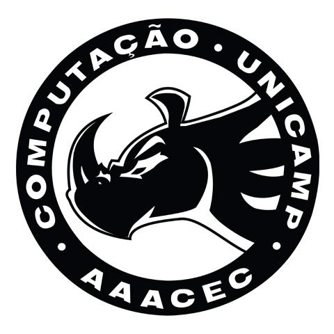
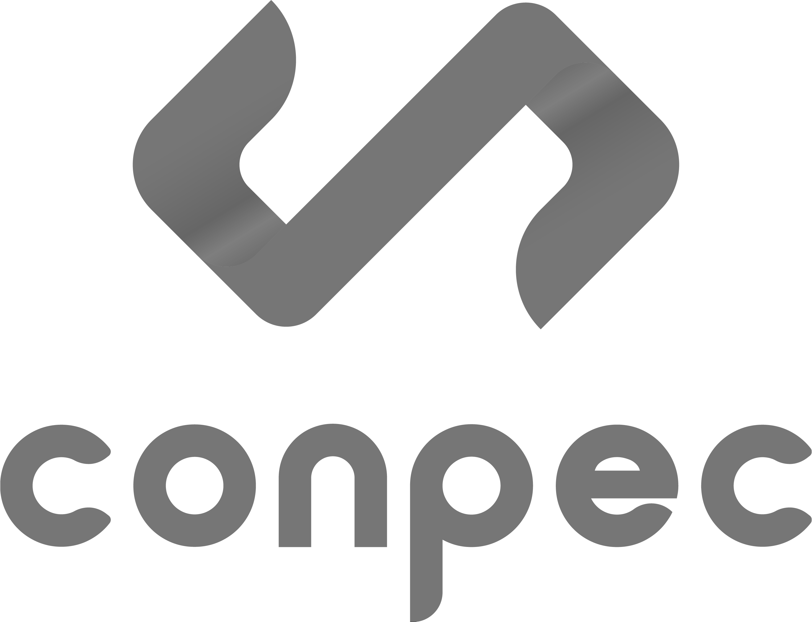
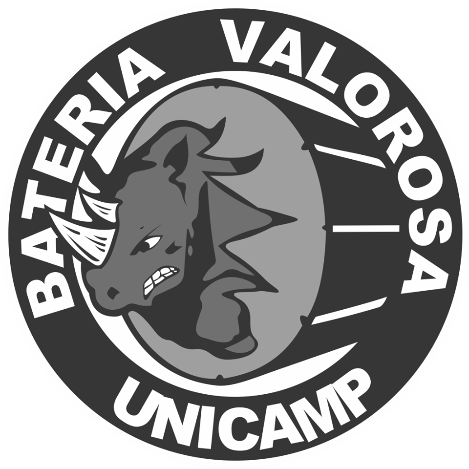
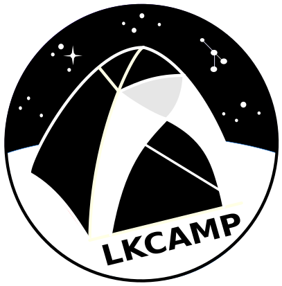
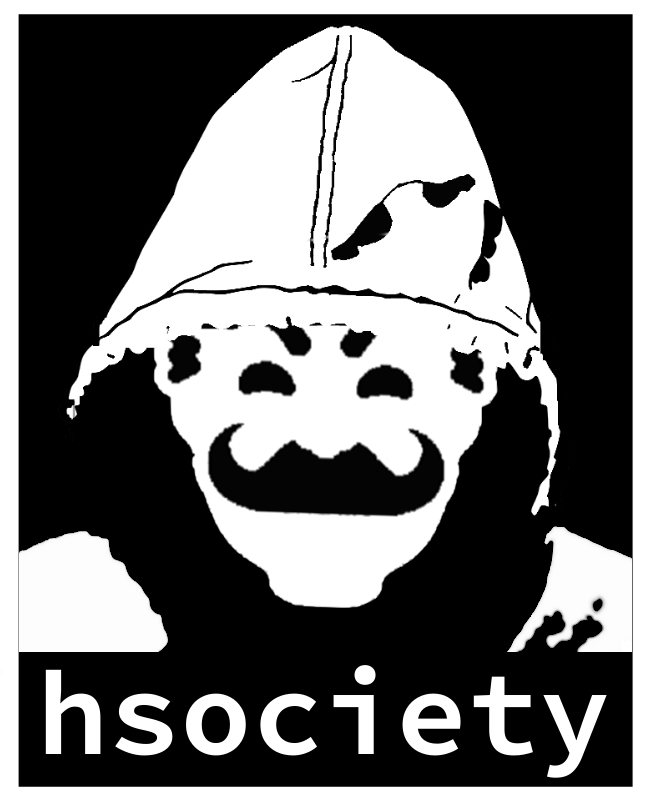
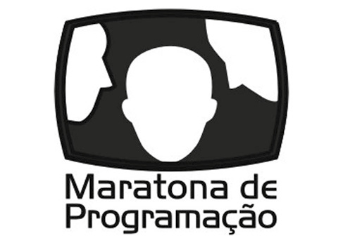
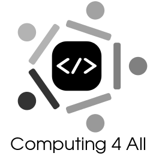

Manual
de
Ingressante
Centro Acadêmico da Computação
Universidade Estadual de Campinas
@cacounicamp
caco@ic.unicamp.br
Março de 2020
Copyright 2011-2020 Centro Acadêmico da Computação Unicamp
www.caco.ic.unicamp.br
Este trabalho está licenciado sob a Licença Attribution-ShareAlike 3.0 Brasil da
Creative Commons. Para ver uma cópia desta licença, visite
creativecommons.org/licenses/by-sa/3.0/br
Para ter acesso ao histórico do Centro Acadêmico, acesse nosso site.
Manuais anteriores e o texto corrido deste estão disponíveis em
github.com/cacounicamp/Manual-do-Bixo
Capa e verso: Gabriel Branco
Gestão Todes (2019-2020)
Diagramado e ilustrado em InDesign e GIMP (veja Prefácio); composto em Roboto.
Impresso na Gráfica Central da Unicamp
em couchê 250g/m2 na capa e offset 75g/m2 no miolo.
“Os melhores anos da sua vida” 11
Como funciona a Universidade 27
Negros e Negras na Computação 40
Cancelamento, trancamento, desistência 47
Centro de Ensino de Línguas 51
A atual situação da Ciência no país 52
Associação de Repúblicas da Unicamp 55

Página intencionalmente deixada em branco.
Olá, mundo!
Prefácio
Bem-vinda/o!
Este é o Manual de Ingressante do CACo, o Centro Acadêmico da Computação. Você deve estar recebendo ele nos primeiros dias de aula. Nós trabalhamos muito para que as informações aqui presentes sejam úteis, e queremos ouvir de você seu feedback sobre este material.
Esta é a maior revisão de conteúdo e formatação desde 2014, feita com três coisas principais em mente: atualizar você sobre as questões que mais impactam a sua permanência na universidade e a convivência do dia-a-dia; contextualizar a situação geral da universidade pública e do nosso ramo profissional de forma leve, introdutória, com informações sobre os principais fatos dos agitados anos passados, para você não chegar por aqui ~boiando~ perdido/a; tornar sua leitura mais atrativa e agradável, através de uma diagramação e ilustração em sintonia com o conteúdo.
Para isso, rompemos algumas tradições: deixamos de usar LaTeX para diagramação (você ainda vai compilar documentos nessa linguagem) e, com isso, alteramos a atualização de texto através do github, plataforma de programação - mas que definitivamente não foi pensada para documentos corridos e diagramados do perfil deste; cuidaremos também de preservar o histórico de edições de outra forma, pelo nosso site.
Nem tudo ficou como gostaríamos: o software utilizado na diagramação (somente) é proprietário. Ironicamente, o utilizamos a serviço da divulgação do software livre, como você verá no nosso Especial. Com isso deixamos espaço, também, para futuras revisões do manual que o aperfeiçoem cada vez mais: reformulado sempre o conteúdo e utilizando cada vez mais o software livre!
Sobre o gênero dos substantivos neste manual
Você ex-vestibulanda/o (aleluia!), humana/o do século XXI, certamente está antenada/o na lutas sociais que acontecem à sua volta, e uma delas é a da igualdade de gêneros. Ela se baseia no respeito e inclusão de todos os gêneros, de forma que todos/as tenham os mesmos direitos em nossa sociedade - inclusive o direito a ser corretamente representado/a.
Infelizmente, nosso idioma não foi feito com isso em mente. Isso que acabou gerando discrepâncias como a regra ortográfica irracional (e machista) de que, havendo 1 homem num grupo de 100 mulheres, deve(ría)mos nos referir às 100 mulheres e 1 homem como “eles”. Por esse motivo, utilizamos em nosso manual uma linguagem diferente, centrada nos artigos femininos ou, quando possível, colocando artigos feminino e masculino na mesma palavra. Ainda há a variação possível utilizando “e”, como gênero neutro.
Como fomos acostumados ao português “padrão” e o manual passou por uma grande reformulação, talvez você encontre lugares onde o texto não segue essa ideia. Se isso acontecer, envie para a gente ou edite no github :) isso ajuda o manual a ficar melhor para todo mundo.
Vale enfatizar que a gente não liga para suas características - a não ser para valorizá-las: nós, o seu Centro Acadêmico, estamos aqui para você, independetemente de quem seja.
Esperamos que goste!
Mensagem da FEEC
Prezados ingressantes do curso de Engenharia da Computação, parabéns pela sua conquista! É com muita alegria que lhes acolhemos na Unicamp e, em especial, na Faculdade de Engenharia Elétrica e de Computação (FEEC). A vida universitária é uma fase muito especial de nossas vidas: alguns poucos anos, tão intensos quanto breves, mas que costumam ser determinantes para nossas escolhas, para que forjemos nosso modo de agir, pensar e ver o mundo. Nesta carta de boas-vindas, gostaria de lhes falar brevemente sobre alguns temas que considero importante para vocês: dar-lhes a conhecer um pouco da FEEC e de sua história; comentar sobre o excelente curso que agora começam; e tecer algumas reflexões sobre a expectativa que a sociedade coloca nas pessoas que, como nós, temos ou tivemos o privilégio de fazer um curso de excelência numa universidade pública da qualidade da Unicamp.
Pode-se dizer que a FEEC começou oficialmente suas atividades acadêmicas no início de 1967, quando ingressou a primeira turma de Engenharia Elétrica da Unicamp. Desde então, nossa Escola cresceu em pessoal, recursos e prestígio, consolidando-se como referência e liderança, tanto no ensino de graduação como de pós-graduação, ambos fortemente alicerçados na excelência de nossa atividade em pesquisa.
Temos a felicidade de poder contar com um corpo docente de primeira linha, no qual convivem, em sinergia, a experiência de vários professores que praticamente começaram a FEEC com o dinamismo de jovens docentes, recentemente contratados. Contamos com funcionários dedicados e comprometidos, alguns dos quais especialmente envolvidos com o ensino de graduação. Temos também uma infraestrutura que, embora constantemente necessitada de melhorias, lhes dará condições adequadas de estudo, tanto teórico como em laboratório. Mas, sobretudo, sabemos que contamos com os melhores estudantes. A partir de agora, vocês também fazem parte do principal patrimônio de nossa Faculdade, que é nosso corpo discente.
O curso de Engenharia de Computação teve início em 1990, surgindo como uma consequência natural do bom nível de atividades que já realizávamos, à época, nesta área, e das necessidades de mercado de uma sociedade que começava a orientar-se intensamente para as tecnologias digitais. É um curso que já nasceu com o selo da excelência e da exigência. Compartilhamos este curso com os colegas do Instituto de Computação (IC) da Unicamp, unidade de ensino e pesquisa do mais alto prestígio, na qual vocês também encontrarão um corpo docente extremamente qualificado. Como as demais engenharias, é um curso que requer uma base forte, de matemática e física. É importante aproveitar ao máximo esses primeiros semestres de curso básico, sem se deixar abater por dificuldades que são naturais, sem perder o “brilho nos olhos” desses primeiros dias de Unicamp. Problemas sempre existem e os professores, os coordenadores de curso, assim como a Diretoria, tanto da FEEC como do IC, estarão sempre à disposição de vocês, prontos para ouvir e remediar qualquer situação que possa lhes afetar. Na FEEC vocês podem contar também com o apoio específico do “Espaço de Acolhimento ao Estudante” (EAE-FEEC); informem-se com a coordenação de curso ou com seus colegas veteranos. A Engenharia de Computação é um curso exigente, mas também intelectualmente estimulante e bem estruturado. Não deixem de colocar todo o esforço, e acudir às ajudas que forem necessárias, para leva-lo a termo com sucesso e motivação constante.
Juntamente com os estudos, vocês descobrirão a vida universitária. A Universidade é também um lugar de cultura e de debates e, sobretudo, oferece oportunidades únicas para se fazer amizades para a vida. Desejo que aproveitem muito bem cada instante de convivência, que participem com empenho e alegria das atividades e das entidades estudantis, nas quais vocês descobrirão um imenso leque de opções para contribuir com a universidade e, a partir dela, com o país. Mas desejo igualmente que não percam o foco no essencial, que é a própria formação, de modo a não deixar arrefecer seus ideais, nem frustrar as expectativas que agora não são só de seus familiares, mas de toda a sociedade. A universidade pública passa por momentos difíceis e é preciso que toda a comunidade universitária tenha consciência, tanto de seu papel histórico fundamental como de sua importância estratégica para o futuro do país. Nossas atividades, gratuitas e de excelência, se sustentam graças ao trabalho de milhões de cidadãos. A sociedade tem direito a nos cobrar sempre mais eficiência, dedicação e qualidade; mas deve também estar honestamente informada do tanto que aqui se faz em prol da formação das pessoas, do progresso das ciências e da tecnologia, do fomento às artes e à cultura. Continuar correspondendo, cada vez melhor, às expectativas dos cidadãos é tarefa essencial dos gestores e professores, mas também dos estudantes, cujo comprometimento ético deve se pautar pela dedicação ao aprendizado e por fomentar o desejo de saber sempre mais, qualificando-se assim para, no futuro, por meio de seu trabalho profissional, dar o justo retorno a quem nos financia.
Eu termino com uma citação que gosto muito, é de um autor clássico da antiguidade grega, Píndaro, que num de seus versos dizia: “torna-te aquilo que tu és”. É um chamado do poeta para que o leitor tome consciência de quem é, de aonde está, e saia assim de um possível momento de alienação ou prostração. Vocês são hoje estudantes ingressantes do curso de Engenharia de Computação da Unicamp. Não é pouca coisa! São certamente orgulho para seus familiares e agora para nós também. Desejo sinceramente que tenham esta realidade sempre presente ao longo dos anos em que estiverem aqui. Sejam bem-vindos, sejam bem-vindas à FEEC e, sobretudo, sejam muito felizes aqui conosco.
João Marcos Travassos Romano
Ex-diretor
José Alexandre Diniz
Diretor
Mensagem do IC
O Instituto de Computação da Unicamp tem origens que remontam a 1969, quando foi criado na UNICAMP um curso de Bacharelado em Ciência da Computação. Primeiro do gênero no Brasil, o curso serviu de modelo para inúmeros outros programas no país.
Referência acadêmica por sua contribuição ao ensino e à pesquisa, o Instituto já foi responsável pela formação de milhares de alunos entre graduação e pós-graduação.
A produção científica de ponta do Instituto se reflete em diferentes contribuições à sociedade desde publicações de alto impacto, parcerias com instituições públicas e privadas, com a indústria, patentes e licenciamentos e, principalmente, formação de recursos humanos de alta qualidade que encontram posições de destaque em diferentes segmentos do mercado.
Atuando sempre na fronteira do conhecimento, o ambiente propício do Instituto de Computação fortaleceu a veia empreendedora dos estudantes. Já são cerca de 150 empresas formadas por alunos e ex-alunos, de startups a empresas globais e até as chamadas empresas-unicórnio. Empreendedores que colaboram diretamente com a formação das gerações seguintes criando, assim, uma cultura de inovação e empreendedorismo.
Contamos hoje com 50 professores atuando em diferentes áreas da Ciência da Computação. Temos treze laboratórios da Pesquisa que abrigam projetos de inovação e disrupção em colaboração com a indústria e diversas instituições. São mais de R$ 50 milhões em projetos em andamento. Tais investimentos dão retorno gerando conhecimento, publicações, novas tecnologias ao mercado e diversos reconhecimentos internacionais para o instituto.
Com infraestrutura de ponta, professores, funcionários e alunos engajados e atuando na fronteira do conhecimento, o Instituto de Computação é hoje um ambiente ideal para a busca do conhecimento, inovação e disrupção.
Agora você é parte de TODA ESSA história! Seja bem-vindo e vamos explorar juntos a fronteira do conhecimento!
Prof. Dr. Anderson Rocha
Diretor
Prof. Dr. Leandro Villas
Diretor Associado

“Os melhores anos da sua vida”
Introdução
Parabéns!
Entrar na Universidade e cursar o ensino superior traz algumas das experiências mais interessantes. Uma delas é aprender profundamente uma especialização numa área do conhecimento, junto a cientistas e profissionais que sabem muito bem - ou até mesmo descobriram - os assuntos que estão ensinando.
Nunca é tarde para estudar. Mas isso é algo que muitos/as de nós, quando temos a oportunidade, agarramos ainda jovens, e aí… tudo fica misturado: a entrada no mundo adulto, relações mais marcantes entre colegas e amigos/as, dezenas de convites para festas por mês (você vai ver a venda de ingressos na porta do Bandejão), responsabilidades crescentes e o famoso boleto (se você nunca pagou um, em breve vai começar a pagar).
O peso dessas responsabilidades e do estudo, assim como as deficiências e exigências da própria universidade podem impactar nossa saúde mental - um tema que está crescendo na discussão, e que incluímos neste manual para você poder começar o curso mais tranquilo/a :)
Mas muito mais do que estudar, aqui você também vai encontrar toda uma rodada de atividades extras incríveis, para todos os gostos: de grupos de estudo a redes de apoio, times de esportes e e-sports, atléticas, empresas juniores e o seu centro acadêmico (olá!). São lugares que vão elevar o significado desses anos a muito mais do que aulas, provas, livros e exercícios, e em todo lugar você vai encontrar amizades que podem durar a vida toda.
Entrar numa universidade internacionalmente conceituada, como a Unicamp, tem ainda mais desdobramentos. O que você fizer no seu cotidiano, fora daqui, tem um impacto tremendamente grande lá fora!
Primeiro, porque nossa universidade é pública. Isso significa que você, estudante, é um/a dos/as poucos/as que a população brasileira conseguiu colocar pra dentro - e arcar com o investimento - de um nível superior de qualidade, que não ensina apenas uma nova profissão, mas produz ciência. De fato, Unicamp, USP e Unesp produzem juntas 1/3 da ciência do nosso país. Não por acaso, a poucos quilômetros do campus fica o Sírius, um acelerador de partículas de padrão mundial! Por esses grandes motivos de orgulho, pelo nosso trabalho científico e de nossos colegas, cabe a nós fazer com que esse investimento retorne à sociedade através de nossa atuação profissional, fazendo o peso do nome Unicamp valer muito mais do que um diploma na parede ;)
Segundo, porque todas as universidades públicas estão em disputa e sofrendo ataques, com constantes tentativas de descredibilização. Você certamente ficou sabendo dos cortes de verbas bilionários que afetaram as universidades federais por motivos de “balbúrdia”, de acordo com o ministro da Educação, Abraham Weintraub. Recentemente, o mesmo ministro também disse (sem provas) que há “extensivas plantações de maconha [...]” nas universidades, e “com agrotóxico”. Para infelicidade do senhor ministro, informamos que essas plantações não existem. Os interesses do governo em difamar as universidades são vários, tanto políticos quanto econômicos.
A Unicamp não é uma bolha: tudo isso tem consequências aqui. Sofremos cortes de verbas; há muita terceirização, o que diminui a qualidade do serviço e as condições de trabalho e sustento dos funcionários; faltam vagas na moradia estudantil e bolsas para estudantes mais pobres. São questões fundamentais que você vai conhecer mais adiante neste manual e no seu dia-a-dia.
O fato concreto é que a universidade pública precisa que você a defenda, como parte de sua jornada por aqui. A ciência e a educação são grandes patrimônios do nosso povo, e somos nós os responsáveis por zelar por por elas. Aproveite esta oportunidade para cumprir o seu melhor papel.
Por tudo isso, bem-vinda/o. “Os melhores anos da sua vida” serão os anos que você fizer e acontecer o seu máximo, com ou apesar do que aparecer no caminho. Caminho é o que não vai faltar; nele, você pode contar com a gente, para o que der e vier.
Todo seu,
Centro Acadêmico da Computação
Mapa da Unicamp de acordo com o ministro da Educação de Bolsonaro.
Não podemos afirmar que o ET de Varginha não está nos porões do IQ.
Le(ge)nda
Universidade Estadual de Campinas
Mapa por Abraham Weintraub
2
3
6
1
5
1
2
5
4
Sobre a Capa do Manual
Para o ano de 2020 a gestão do CACo organizou um concurso cultural para que a comunidade universitária escolhesse a capa do nosso internacionalmente consagrado1 Manual de Ingressante (antigo Manual do Bixo ou Manual d* Bix*).
O tema foi escolhido por ser profundamente computeiro e atual:
Software Livre:
Democracia para se expressar,
Liberdade para explorar,
Segurança para agir.
Tivemos vários trabalhos concorrendo, e o vencedor está na capa deste manual :)
A arte escolhida pela comunidade abordou o tema vinculando, também, a democratização da universidade através da política de cotas recentemente implementada, sobre a qual você poderá saber mais em vários lugares nesta edição do manual.
Fazemos menção a todos os trabalhos inscritos para que você também possa desfrutar dessas maravilhosas obras de arte!
Para saber como foi o concurso, você pode acessar o edital em
bit.ly/manualcaco2020
1 ou ao menos gostaríamos que fosse.

Clarice Dellape (Artes Visuais)
Clarice Dellape (Artes Visuais)

Samir Monroe (Arquitetura)
<sua_arte.png>
Sua arte pode ser a próxima capa do Manual de Ingressante!
Esteja antenado/a e participe dos próximos concursos culturais do CACo :)
Especial: Software Livre
Software é tudo igual?
Quando as pessoas começaram a ter computador, “software” e “hardware” ainda eram palavras muito novas. Para ajudar as pessoas a entender, há um famoso provérbio:
“Hardware você chuta,
software você xinga”
Agora que você está entrando num curso de computação, vai saber muito mais sobre essas duas palavras. Este ano, queremos começar com uma delas: o software, que não é tudo igual.
Software Proprietário:
uma historinha
Billie escreveu muitas linhas de código que funcionam em computadores. Como muitas pessoas precisam da utilidade do seu software, o Runnie, Billie monta uma empresa com mais programadores/as, que expandem o Runnie. Billie quer receber por seu trabalho, então o código todo fica guardado na BillieSoft, de sua propriedade; o CD com o software não contém o código legível, só um compiladão que funciona na casa das pessoas. As programadores/as da BillieSoft têm acesso restrito ao código, para evitar vazamentos de propriedade.
Contudo, a vida fora da BillieSoft continua e a sociedade vai formando novos e novas programadores/as. Mesmo sem ter acesso ao código, gente com esse conhecimento começa a entender como funciona o Runnie e percebem que ele não é tão funcional, nem tão seguro quanto poderia ser. Desses, alguns usam esse fato para hackear pessoas que usam o Runnie. A BillieSoft faz o melhor que seus programadores, às vezes bem pagos e às vezes não, conseguem fazer, e o Runnie permanece mais ou menos protegido, apesar de várias tempestades.
Software Livre
e de Código Aberto
Filho das universidades públicas como a nossa, o software livre (ou FOSS) segue uma abordagem diferente da de Billie.
As enormes vantagens
Bom, voltando a nosso exemplo acima, a BillieSoft tem tantos/as programadores quantos é possível (e a margem de lucro deixa) contratar. Além disso, gasta recursos próprios desenvolvendo ferramentas de segurança do sistema (não do usuário) para evitar pirataria; e tem despesas com programas de recompensas a hackers (que vendem para a empresa as vulnerabilidades que encontram, em vez de sair cometendo crimes cibernéticos invadindo computadores) (sim, isto é um tipo de emprego que você pode ter) (é legalizado mas nem sempre estável).
Enquanto isso, o software livre tem um número indeterminado de programadores. Quando o software é muito popular, recebe uma atenção proporcionalmente maior da comunidade. A propriedade do código é praticamente coletiva1, portanto não é necessário controlar quem tem acesso: qualquer pessoa tem. Veja na tabela abaixo dados de alguns repositórios que compõe o kernel do GNU/Linux2 durante o segundo semestre de 2019.
Os resultados são incríveis. Com interesse em novas funções, a comunidade aprimora o software constantemente, atingindo resultados profissionais. Estudantes dentro e fora de universidades podem utilizar o código para aprender como funcionam determinados recursos computacionais. Pesquisadores/as podem fazer ciência sem o pesado custo de softwares específicos para seus nichos, e personalizar software para suas necessidades específicas. Sistemas operacionais, como o GNU/Linux, têm vulnerabilidades encontradas e corrigidas tão rápido, entre outras vantagens de arquitetura, que não vale a pena desenvolver um vírus.
O modelo funciona tão bem que tem levado até empresas tradicionais de software privado a repensar as práticas e testar abrir seus códigos mantendo controle e propriedade sobre eles, o que pode ter consequências ainda não vistas, sobretudo no nosso mercado de trabalho.
O uso profissional também é geralmente livre, derrubando o custo inicial de abrir negócios e projetos sociais, ou mesmo fazer um site ou blog gratuitamente.
Na indústria web, por exemplo, o uso do GNU/Linux é tão amplo que se tornou conhecimento básico de qualquer um que trabalhe com servidores, que hospedam desde sites até backends de aplicativos e empresas inteiras.
Essa massa crítica justificou a criação de empresas (e empregos remunerados) inteiramente voltados a software livre!
Democracia
para se expressar,
Liberdade para explorar,
Segurança para agir
Seja por limitações de responsabilidade legal ou pouco estímulo econômico por parte da maioria dos softwares privados, nenhum outro formato de criação e licenciamento consegue alcançar o impacto na sociedade que o software livre proporciona.
Com sistemas operacionais, navegadores, office, criptografia, redes sociais e messengers instantâneos, é a maior linha de garantia da liberdade de expressão e da democracia no século 21. Mantidos por comunidades de olhos muito vivos, não há interesse em espionar usuários e vender seus dados. Ainda assim, há muitas pessoas que poderiam utilizar os benefícios do FOSS mas que não tem acesso a ele, quase sempre por desconhecimento. Por isso é muito importante inserí-lo no nosso dia-a-dia e ajudar a espalhá-lo por aí.
Somente através dele é possível garantir acesso irrestrito e seguro à informação e comunicação independentemente de contrato, governo ou interesse particular. Em tempos autoritários, qualquer ação pode ser monitorada se não estivermos munidos de um nível de segurança que permita a liberdade de debate e organização.
É com software livre, como a rede Tor, que jornalistas informam o mundo sobre ditaduras e crimes de guerra e milhões de pessoas acessam a internet apesar de censura; como Firefox, que começou a virar o jogo a favor dos usuários pela privacidade nas compras e visitas online; como VeraCrypt e LUKS, que asseguram criptografia state-of-the-art para qualquer pendrive ou HD.
Isso é especialmente importante no nosso tempo em que, dentro de softwares privados, fechados em caixa preta, é determinado o que é visto e o que é ocultado nas redes, e se proliferam pragas como as fake news e a espionagem de dados em massa.
O Free Open Source Software, livre-como-a-liberdade, é mais que software de graça: não “é” propriedade de ninguém, pois é propriedade de todos, em benefício de todos!
1 Geralmente há pessoas jurídicas sem fins lucrativos que são mantenedoras do código, com funcionários dedicados a aprovar somente as alterações de código que a comunidade realmente desejar e que tenham um padrão de qualidade mínimo. A comunidade pode fazer uso e alterações dessa “propriedade” dos mantenedores através de licenças de uso extremamente abertas, de forma que efetivamente é como se o software fosse de todo mundo.
2 As informações foram extraídas de git.kernel.org e lwn.net em parceria com o grupo de estudos do Kernel do Linux de Campinas (LKCAMP).
Funcionário do mês na BillieSoft.
|
Repositório |
Descrição |
Autores |
Contribuições |
|
herbert/crypto-2.6 |
API de criptografia |
3666 |
32135 |
|
mchehab/linux-media |
Subsistema de mídia e drivers |
3936 |
36670 |
|
gregkh/tty |
Drivers para o terminal |
4039 |
37561 |
|
Versão 5.4 do kernel |
Código enviado para esta versão |
1802 |
14000+ |
O Blender é um software livre profissional de modelagem 3D para jogos e animação.
Para você baixar hoje
LeiaMe.txt
C:/users/bilu/downloads/virusForLinux/LeiaMe.txt
Porque virus para GNU/Linux são bastante incomuns
ou Como instalar seu virus no Linux, por Charlie Harvey
evilmalware 0.6 (beta)
Copyright 2019 EvilCorp, Inc.
Este software é livre. NÃO há garantias de funcionamento, nem sobre MERCANTILIZAÇÃO, COMPLETA DESTRUIÇÃO DE DADOS IMPORTANTES ou APTIDÃO PARA CUMPRIR TAREFAS ESPECÍFICAS (ex. enviar milhares de emails spam para pessoas em todo o mundo).
Instalação Básica
Antes de tentar compilar este virus, confirme se a versão correta da glibc está instalada, e que seu firewall está configurado para “permitir tudo”.
LEIA TAMBÉM
evilmalware(1), evilmalware.conf(5), porFavorDeleteMeusArquivos(1)
AVISO LEGAL
Esta piada foi livremente traduzida e adaptada do site da Free Software Foundation. A Free Software Foundation não solicitou copyright sobre esta piada.
Sobrevivendo na Unicamp
A palavra é Permanência
A ideia é simples: agora que você entrou na universidade, não vá embora tão cedo (e sem diploma). Você precisa permanecer. Isso envolve uma porção de fatores e necessidades diferentes para cada estudante.
Se você têm o que comer e onde morar: permanência. Sua estabilidade emocional e saúde mental: permanência. Se consegue se locomover até a universidade (e onde mais estiver obrigado a estudar): permanência. Se tem acesso aos livros, conteúdos, softwares, computadores, equipamentos, sistema de saúde (vai que você fica doente?): é tudo permanência.
Qualquer um desses pilares, se cair, pode te deixar numa situação extremamente vulnerável e até mesmo forçar a evasão da graduação, afinal de contas tudo isso impacta diretamente no seu desempenho acadêmico e sua capacidade de cumprir com o currículo. Mas como faz para garantir tudo isso?
Dois modelos de universidade
Um jeito é o “se vira”. Para estudantes com famílias economicamente mais bem estruturadas, é razoavelmente simples garantir tudo isso: pais pagam o aluguel; o bandejão é pagável mas você nem precisa dele; pode pagar os próprios livros e você tem seu computador. Esse é o modelo mais “se vira” possível, e quem não conseguir se virar que procure uma bolsa. Parece coisa de universidade particular, não é?
Um dos lugares onde a política do “se vira” é a norma são países onde a Educação Pública é toda privatizada, como os EUA. Os estudantes acumulam, hoje, US$ 1.5 trilhão1 em dívidas para pagar despesas com a faculdade. A calamidade é tanta que há estudantes morando dentro de carros para não perder a vaga em universidades prestigiadas2 - o que para alguns pode ser visto como mais uma “história de superação”, é a realidade dura de milhares de estudantes.
A maioria dos estudantes depende de alguma coisa que se encaixa como política de permanência. Se você parar pra pensar, seria cada vez mais difícil você continuar estudando, por pelo menos cinco anos, se tivesse que gastar R$ 25 por dia com refeições, mais R$ 1000 por semestre com livros, mais R$ 1100 numa kitnet, mais R$ 500 com contas... Por isso a enorme maioria dos estudantes utiliza bandejões (com o valor subsidiado, custa R$ 6 para almoçar e jantar), bibliotecas, vive em residências compartilhadas e usa a wifi do campus com muito gosto (quando ela pega) - mesmo sem ter uma algum tipo de bolsa de permanência, você também vai usufruir dessas políticas.
Mas nós vivemos num país que, apesar de inúmeras riquezas, tem uma população pobre, e muita gente depende de muitas coisas da política de permanência. A universidade pública, que além de ser de qualidade tem a missão de democratizar o conhecimento, tem uma dívida com a população trabalhadora que a financia (veja Como Funciona a Universidade). Mesmo assim, não muito tempo atrás, mesmo que alguns estudantes pobres entrassem, só conseguia permanecer aqui quem podia “se virar”.
O outro jeito de garantir permanência é o que os (não poucos) impostos pagos financiem o cumprimento do direito irrestrito e constitucional à Educação aos estudantes que, como a maior parte do povo, não podem pagar. Mesmo que o investimento tenha que aumentar, é claro que o retorno trazido por um profissional de ponta à sociedade mais do que paga esse investimento em um período razoavelmente reduzido de tempo.
Os resultados são tão bons e o investimento em permanência é tão necessário que as próprias universidades públicas entenderam que, se não gastarem um tostão em permanência, vão acabar atingindo níveis gigantescos de evasão.
Mais do que isso: quando não há permanência, o drama social é tão generalizado que, como você verá abaixo na luta pela moradia, as lutas estudantis tomam proporções gigantes.
Com o aumento das vagas, o movimento de cursinhos populares e a política de cotas sociais e étnico-raciais, sobretudo após a redemocratização do país, mais e mais estudantes de origem pobre passaram a ter acesso à universidade e lutaram pesado, bravamente, para estender as políticas de permanência estudantil e garantir que a universidade incorpore a sociedade que a financia.
Bandejão, bandeco, bandex
A universidade, após sua fundação, passou 10 anos sem ter bandejão. O primeiro foi o RU; em seguida, um prédio que pertencia ao CABS (Centro Acadêmico Bernardo Sayão <3, da Engenharia Elétrica) foi convertido no RA, perto da FEEC; depois foi construído o RS, mais moderno. Hoje todos os campi da universidade têm acesso a bandejões, inclusive os colégios técnicos (COTUCA em Campinas e COTIL em Limeira).
O preço das refeições (que era R$ 2 e agora é R$ 3) é subsidiado e, sem ele, cada estudante teria que viver na base da marmita (passando maus bocados para ter tempo para cozinhar) ou pagar o preço comercial de todas as refeições, todo dia - chutando baixo uns R$ 25, o que dá R$ 550 ao mês sem os finais de semana.
A abertura de café da manhã tem menos de 5 anos, e é uma reivindicação quase tão antiga quanto a abertura nos finais de semana - uma pauta importantíssima para quem não pode voltar pra casa da família nos fins de semana e tem que se virar para se bancar, mas que ainda não conseguimos :(
Você tem mais informações sobre o funcionamento dos bandejões, que têm alimentação vegetariana desde 2013, na seção Comer na Unicamp deste manual.
Orientação Jurídica Gratuita
O SAE, Serviço de Apoio ao Estudante, oferece orientação jurídica gratuita para uma porção de casos, não necessariamente relacionados à universidade ou vida acadêmica: o serviço está aí justamente para orientar estudantes nas questões pessoais pelas quais a gente pode passar.
Basta se dirigir pessoalmente ao SAE, cujo endereço está no final desta seção ;)
Moradia: luta e disputa3
Em 1986 foi organizado o movimento estudantil TABA: sem ter onde morar, 60 estudantes ocuparam salas do CB por mais de dois anos, reivindicando uma moradia gratuita aos estudantes de baixa-renda. Essa ocupação estudantil ficou conhecida como “A Taba”, em referência a tabas indígenas que eram caracterizadas por uma cultura de coletividade.
O reitor da época, Paulo Renato Costa Souza, prometeu que 1.500 vagas – correspondente a cerca de 10% do total de estudantes daquela época – seriam entregues até o mês de julho de 1989 e, no caso de não cumprimento das cláusulas que garantiam a construção da moradia, ele assinou um documento que autorizava o DCE Unicamp a ocupar novamente o campus, assim como o Movimento TABA havia feito. Em 1990, a Moradia foi inaugurada com novecentas e quatro vagas, já abaixo do prometido.
Na greve de 2016, os estudantes reivindicaram a expansão das vagas e conseguiram que o reitor José Tadeu Jorge assinasse um documento que a garantisse. Com o fim da greve, criaram-se grupos de trabalho (GTs) para analisar e avaliar a ampliação e os programas de permanência estudantil da universidade. Eventualmente os GTs foram dissolvidos e o terreno, que estava em processo de compra, ficou embargado em cartórios. Finalmente, membros da administração central da universidade admitiram em reunião com membros do movimento estudantil que a nova moradia “não vai sair”.
Além disso, há diversos problemas na infraestrutura que indicam uma falta de manutenção generalizada, como estruturas que foram evacuadas sob perigo de desmoronamento; problemas elétricos, de drenagem nas ruas e de infiltração de água nas casas; dificuldades na separação do lixo reciclável; e vazamentos. Há muitos casos de superlotação, com casas abrigando até sete estudantes, e vários casos de furto, principalmente de bicicletas dos moradores.
A moradia estudantil digna é um espaço determinante para a garantia da democracia no acesso e permanência no Ensino Superior - incluindo os campi que sequer têm programa de moradia estudantil, em Piracicaba e em Limeira.
Por fim, há uma disputa de projeto sobre a moradia: ao invés de construir mais casas, a reitoria tem “investido” na “Bolsa Moradia” - um valor de cerca de R$ 400 pago a estudantes para se manterem em repúblicas. O impacto na organização estudantil é enorme, pois os bolsistas estão pulverizados e não têm um espaço para se encontrar e auto-organizar, caso precisem defender sua pauta.
Os milhões de reais por ano vão pelos ares em aluguéis que em pouco tempo poderiam arcar com a construção de uma moradia inteira. Crises financeiras cada vez mais constantes - lembre-se que ainda estamos vivendo a “crise de 2008” - podem pôr em xeque essas bolsas, o que não ocorreria numa moradia construída. O tiro cego da reitoria acerta, contudo, o mesmo alvo: a especulação imobiliária de Barão, que só tem a agradecer.
Inscrição para bolsas
Todas as bolsas abaixo são centralizadas pelo SAE, Serviço de Apoio ao Estudante, órgão oficial da universidade. Você tem cerca de uma semana para se inscrever, então não perca o prazo!
www.sae.unicamp.br
R. Sérgio B. de Holanda, 251. Mesmo prédio do SAPPE e CLE, ao lado do Bandejão.
Há também bolsas acadêmicas como a Iniciação Científica, na seção Vida Acadêmica.
O Sistema de Bibliotecas da Unicamp te dá acesso à maioria dos livros e artigos que você desejar, sem pagar nada por isso! Só não deixe para pegar os livros das matérias na última hora, pois nem sempre há exemplares suficientes para todos os alunos.
1. Vista aérea da moradia; 2. Ocupação da moradia em 2011 exige a construção de 3000 vagas para cobrir o déficit; 3. Assembleia de 1200 estudantes em 2016 tomou o CB e lançou greve estudantil por cotas, contra cortes de verbas e pela construção de uma nova moradia.
O que você não viu
1986. Sem ter onde morar, estudantes estabelecem o movimento TABA e acampam no CB até a conclusão da construção da moradia.
2016. Greve estudanil (foto) é lançada e dura 5 meses, ocupando a reitoria;
2017. Longa sessão do CONSU aprova de cotas étnico-raciais e sociais, diante de um ato com mais de 600 pessoas.
2019. Os primeiros estudantes cotistas entram na universidade. Estudantes organizam uma rede de apoio solidário para viabilizar que indígenas e cotistas tenham condições suficientes para se estabelecer nas primeiras semanas, o que ocorreu também em 2020.
Vista do Hospital das Clínicas e entrada do CECOM.
Cuidando da sua saúde
CECOM
Centro de Saúde da
Comunidade
A CSS, Coordenadoria de Serviços Sociais, é responsável pelo planejamento e execução de programas de saúde voltados à comunidade universitária da Unicamp – alunas, alunos, funcionárias, funcionários e docentes.
Em português, isso quer dizer que é um “plano de saúde” da Unicamp. Demora um pouco (embora o pronto-socorro do CECOM seja bem rápido), mas funciona. Você pode marcar consultas médicas e fazer exames. O CECOM é localizado próximo ao HC. Para ir, é melhor pegar o circular pois é beeem longe. De circular interno, peça para descer no CECOM. É o ponto final ou o penúltimo dos circulares.
Fique de olho na sua caixa de entrada perto do período de inverno, pois o CECOM costuma disponibilizar vacina contra gripe gratuitamente - uma dose em clínica particular é bem cara, vida longa o sistema público de saúde.
Outra coisa que você não pode perder no CECOM são os testes de ISTs (infecções sexualmente transmissíveis). O teste cobre várias ISTs, inclusive o HIV, e o resultado sai na hora. É necessário agendar, exceto se você tiver tido exposição a alguma IST.
Caso você tenha Unimed, o Centro Médico, que fica perto da Unicamp, atende pela Unimed. É mais rápido que o atendimento da Unicamp (CECOM ou SUS).
Para marcar consultas com dentista, vá ao CECOM e pergunte onde que é. Isso é mais fácil que você tentar entender lendo aqui. Basicamente é embaixo do CECOM, muito fácil de chegar se alguém apontar com e dedo e disser “ali”.
Funciona muito bem, e o atendimento já começa com uma palestra instruindo como cuidar bem da boca no dia a dia (afinal, a melhor saúde é a preventiva). Mas se você estiver com dores, te atendem na hora sem marcar consulta nem assistir palestra.
Veja todas as informações sobre atendimento e contato no site do CECOM.
www.cecom.unicamp.br
Hemocentro
O Hemocentro é para você doar sangue. Como o Hospital das Clínias atende todo o estado de São Paulo (e além) e tem fácil acesso a rodovias, o Hemocentro é um banco de sangue relevante para toda a saúde pública.
Também organiza um centro de doação itinerante num ônibus adaptado que fica pelo campus e pela cidade de Campinas.
www.hemocentro.unicamp.br
...mental!
Vamo lançar a braba pra você: na faculdade, a gente tem muita coisa boa e muita coisa ruim também. Pronto, falamos, nada é perfeito. Mas pela relevância que o curso toma nas nossas vidas, isso tem um peso que pode acarretar vários efeitos psicológicos na gente.
Levantamentos demonstram altos índices de estresse, ansiedade e até depressão na pós-graduação1. Calma, você está lendo o manual certo: é que muitos dos fatores que tornam o ambiente acadêmico insalubre na pós também estão presentes na graduação.
Por isso, o melhor que temos a fazer é entender isso e saber o que fazer pra encarar esse problema sem sofrer demais com ele.
Estudar dá (ou é) trabalho
Ao contrário do que dizem por aí, universidade não é tudo drogas e orgias (sorry, Olavo de Carvalho). Primeiro, porque a gente estuda, e MUITO. É uma carga imensa e, honestamente, injusta. Infelizmente, a maioria de nossos professores nas Exatas não têm formação em licenciatura nem nada em Pedagogia, o que os deixa sem ferramentas importantes para ter didática. Aí, alguns passam muita matéria e acham que, se pouca gente reprovou (você leu certo, reprovou), é porque alguma coisa está errada (pois é). Os catálogos dos cursos também têm problemas.
Assim, o risco é grande de a gente acabar com a sensação de falta de tempo, ansiedade, dificuldade de nos relacionarmos, e até mesmo sentimento de culpa quando descansamos ou nos divertimos (aquele “nossa, eu devia estar estudando”). Parece que somos incapazes por causa do alto nível das matérias, mas na verdade existe sobretudo um baixo nível do ensino, em várias áreas e institutos. Para quem já está começando a vida adulta, tem que ainda pagar contas e lidar com a distância da família, isso também acaba exercendo bastante pressão.
Work hard, play hard?
É neste contexto que também acabamos buscando ter algum tipo de refúgio ou sensação de controle em nossas vidas. Exageramos nas redes sociais e nos viciamos nesse estilo de vida em que não prestamos muita atenção nas coisas, em meio a centenas e centenas de postagens e mensagens todos os dias. Pode parecer interessante usar entorpecentes constantemente ou em alta quantidade, na busca de atividades que o cérebro entende como prazerosas e compensatórias. Em nenhuma dessas coisas acima você pode confiar, nenhuma. Apesar de distrair, elas não resolvem os problemas (que podem se acumular), podem acabar contribuindo para o sentimento de culpa ou mesmo tendo efeitos colaterais. Pesa ainda o quanto a nossa cultura negligencia a saúde mental, até porque o acesso universal a psicólogos/as infelizmente não está disponível no sistema de saúde gratuito e, ainda que tentemos optar por pagar, eles são caros.
Felizmente, é nesse ambiente que também fazemos muitas amizades que podem apoiar umas às outras e estudar juntas. Nosso instituto também tem um ecossistema incrível de grupos e entidades extracurriculares e festas (afinal somos jovens, e precisamos de vivência) que nos ajudam a socializar e tirar a cabeça dos livros.
É sempre muito importante se lembrar de que você sempre tem apoio e que a faculdade não é e jamais deveria ser uma competição. Você tem colegas e veteranes que passam ou passaram pelas mesmas coisas e podem ajudar. Agindo com franqueza e sinceridade, buscando entender o que acontece com você e se comunicando, sem medo de pedir ajuda ou desabafar, é uma ótima forma de buscar um conforto que muitas vezes é essencial e faz toda a diferença. Lembre-se que o sofrimento psíquico não te faz melhor ou pior, e o seu rendimento acadêmico não significa tudo na vida - aliás, nosso sistema de educação é terrivelmente falho e de forma alguma consegue dar a última palavra sobre o que uma pessoa é ou deixa de ser. E fica a dica: bitolar não é saudável!!
Por isso, não espere demais e não se negligencie. Busque sempre as coisas e pessoas que te ajudam a se fortalecer. Sempre conte com a comunidade, converse com o CACo e as demais entidades, apresente ideias, se abra (ou denuncie) sobre aquilo que te faz mal. Juntas/os, podemos melhorar a nós e nosso entorno. O que não pudermos melhorar, lutaremos para que melhore!
SAPPE
Serviço de Apoio
Psicológico e Psiquiátrico
A universidade oferece serviços de assistência psicológica e psiquiátrica gratuitamente através do SAPPE, órgão ligado à Pró-Reitoria de Graduação (PRG). Ele oferece algumas modalidades de atendimento, divididas em duas principais categorias: o atendimento regular e o pronto atendimento.
O atendimento regular é um tratamento mais contínuo que é feito geralmente em quatro sessões, a menos que precise ser aumentado, de acordo com a opinião profissional.
Você deve preencher uma Ficha de Cadastro para atendimento regular de acordo com os horários disponíveis no site do SAPPE (disponível abaixo) na recepção do Serviço (endereço e instruções de chegada abaixo) e agendar a participação no Grupo de Recepção. Após a participação no grupo, você pode agendar uma Entrevista de Triagem que te encaminhará para o tratamento adequado.
Observação: O Grupo de Recepção é uma palestra que explica o funcionamento do serviço, maaaas ela parece ser montada para te desmotivar a usá-lo. Os períodos de espera entre cada etapa também podem ser bem longos e servem para esse mesmo fim. Então, se você realmente sente a necessidade de buscar esta orientação, não desista.
O SAPPE também tem pronto atendimento. Essa é uma sessão única voltada para quando você estiver passando por uma crise ou emergência, mas com os horários limitadíssimos. Nesse caso, você deve passar na sede do SAPPE nos dias e horários disponíveis no site.
R. Sérgio B. de Holanda, 251, 1º piso
Em frente ao prédio da DAC; mesmo prédio do SAE e CLE, ao lado do Bandejão.
19 3521-6643, 3521-6644
sappeass@unicamp.br
www.prg.unicamp.br/?page_id=443
1 Um terço dos alunos de pós-graduação têm depressão ou ansiedade. Metrópoles, 2018.
Nos dias de tempestade, lembre-se: acima das nuvens, sem falta, está o céu azul :)

Após os ataques do governo em 2019, o DCE e a APG (Associação da Pós-Graduação), unidas aos centros acadêmicos, atléticas e entidades como o Núcleo de Consciência Negra e a Frente Feminista, além dos sindicatos de funcionários e professores, exigiram da reitoria uma assembleia em defesa da universidade pública e sua autonomia.
A assembleia terminou num ato em solidariedade às/os funcionárias/os dos bandejões, ameaçadas/os de demissão em massa. “Nenhuma família na rua! Se a Unicamp demitir, a gente luta!”
Como funciona a Universidade
O intuito desse bloco é deixar você sabendo um pouquinho como funciona tudo por aqui. Esperamos não te cansar com muito vocabulário, só as principais palavras mágicas que a gente ouve mais frequentemente quando alguma coisa importante é discutida ou feita. Também explicamos o orçamento, afinal é o dinheiro da universidade que mantém as coisas fluindo por aqui e, como se diz, escolhe a música que a banda toca.
Instituição
A universidade é uma autarquia pública - o que significa que é um órgão público do estado, mas muito mais independente de governos (que trocam a cada 4 anos). Portanto, tem sua própria autonomia para orçamento e contratações, realizar obras, etc.
O que garante essa independência é a chamada Autonomia Universitária, garantida pela Constituição de 1988, mas que deriva da própria origem da “universidade” como instrumento de avanço da sociedade como um todo.
O famoso tripé que coordena (ou deve coordenar) o trabalho da Universidade é o seguinte:
Órgãos
A entidade oficial “Unicamp” tem seus próprios órgãos de gestão e organização interna - alguns deles com representação estudantil e de funcionários administrativos, mas sempre como uma minoria (bem pequena), que é eleita para comissões de todos os níveis. Não deixe de se informar e participar! Haverá divulgações dessas eleições em vários momentos do ano. Também há, na seção Além da Graduação, as entidades estudantis auto-organizadas (que são muito mais a nossa cara).
CONSU
Conselho Universitário. Órgão colegiado composto pelo reitor, Pró-Reitores, Diretores dos Institutos e Faculdades, Professores Doutores e mais representantes de docentes.
Juntos com cerca de 30% dos membros, há representantes dos demais funcionários públicos e também dos estudantes. Tem cadeiras também para a FAPESP, Prefeitura de Campinas, DIEESE e para a Federação das Indústrias (FIESP).
Reitoria
É como a “presidência” da universidade. Há um conselho de reitores das 3 estaduais, o CRUESP, cujo/a presidente entra na linha sucessória do governo do estado (chique, bem).
Comissões
Há comissões para diversos temas, em várias hierarquias. As principais são a Comissão Central de Graduação (CCG) e as comissões de dentro dos institutos.
Institutos e Faculdades
São as unidades que a gente realmente frequenta todos os dias. Têm suas próprias comissões e decisões, sempre de acordo com os órgãos superiores. A principal entidade dentro de cada instiuto é a Congregação, pela qual passam todas as decisões mais importantes, com representantes eleitos dos estudantes.
Diretoria Acadêmica (DAC)
Além do seu instituto, é o principal contato que você terá. Esteja sempre atento ao site e ao calendário da DAC. Ela centraliza a comunicação e os procedimentos dos estudantes com os outros órgãos, então lembre-se: não é o/a tiozinho/a do balcão que aceita ou nega nossos suados pedidos de matrícula, eles/as só fazem a ponte!
Dinheiro
Quem escolhe o/a reitor/a?
A cada 3 anos há uma votação, o que faz muitos acharem que é uma eleição. Contudo, é apenas uma consulta à comunidade, em que o voto dos professores tem maior peso (70%).
Os 3 principais colocados são enviados para escolha do Governador do Estado. Caso famoso1 foi quando a nomeação do educador Paulo Freire (foto), escolhido por maioria da comunidade durante a ditadura militar, foi negada pelo governador biônico da época, Paulo Maluf, tradicional político e empresário.
1 Passado a Limpo. Jornal da Unicamp, 2014.
Assembléia Legislativa do Estado de São Paulo (ALESP) e CONSU, nos prédios da Reitoria.
Facilidades e Serviços
Transporte interno
Com uma infraestrutura do porte de nossa universidade, há muitos recursos dedicados a uma rede de transporte interno dentro e fora do campus de Barão Geraldo, de graça!
O Circular Interno funciona dentro do nosso campus e tem várias rotas cobrindo os lugares mais distantes (inclusive o IC, que é longe dos outros). A partir das 18h até as 23h funciona somente o Circular Noturno, que tem a frequência bem menor e menos rotas.
Também é livre o acesso de qualquer estudante ao ônibus da Moradia, comumente utilizado por estudantes que moram lá ou em repúblicas nos arredores da Av. Santa Isabel. Basta aguardar no ponto de ônibus no bolsão de estacionamentos da Biblioteca Central, ao lado do Bandejão, e mostrar o RA. De lá também sai o Intercampi, ônibus que conecta os campi de Barão e de Limeira. O uso é limitado, e você tem que se inscrever com antecedência no site do serviço.
Você pode conferir as rotas, horários e até posição geográfica ao vivo pelo aplicativo Unicamp Serviços, que também tem várias outras coisas legais.
Além desses transportes oferecidos pela universidade, quem é de São Paulo também tem a opção de utilizar o Massa Crítica, que é particular. Ele existe para suprir a demanda de transporte entre a Unicamp e a USP e seus arredores sem passar pela rodoviária de Campinas e da capital.
O que comer na Unicamp
Bandejões
Um dos momentos de glória do dia de uma/um futura/o engenheira/o, cientista ou bacharel é o Bandejão. É a hora de intensas e indiscutíveis emoções. Jamais tente descobrir o sabor do suco pelo paladar (caju ou manga?), é mais cômodo ler no cardápio do dia. O Bandejão é o lugar de você se encontrar com amigas e amigos (combinando antes ou não), contar os micos nas aulas, jogar conversa fora e falar mal da comida, que nem é tão ruim assim como muitos dizem - e salva o rolê pelo preço.
Eles funcionam de segunda à sexta e são bem afastados um do outro, o que torna qualquer instituto razoavelmente perto de um “bandeco”, independente de onde tenha sido ou vai ser sua aula. Em períodos especiais, como férias, os restaurantes podem funcionar em horários reduzidos ou não abrirem, então fique de olho no site da prefeitura, no GDE, ou principalmente no aplicativo da Unicamp. Nessas plataformas você também pode encontrar o cardápio da semana, que conta com a famigerada carne picada pelo menos um dia.
Atualmente, o preço do café da manhã é de R$ 2,00 e do almoço e jantar é de R$ 3,00. Sem dúvida, um ótimo custo benefício, porém nem sempre foi assim: historicamente, o preço do bandejão foi de R$ 2,00. No entanto, entre 2017 e 2018, numa reunião extraordinária do Conselho Universitário, foi aprovado o aumento das refeições dos restaurantes universitários. Por mais que a inflação tenha aumentado, não tiveram reajuste equivalente as bolsas estudantis (mas elas permanecem ativas). Para saber mais, consulte a seção de permanência estudantil.
|
Restaurante... |
RU: “Universitário” |
RA: “Administrativo” |
RS: da rua Saturnino |
|
Café da Manhã |
7h - 8h30 |
||
|
Almoço |
10h30 - 14h |
11h30 - 14h |
11h - 14h |
|
Jantar |
17h30 - 19h45 |
17h30 - 19h |
17h30 - 19h |
|
Observações |
Perto do PB. Abre nas férias |
Perto da FEEC e da reitoria |
Perto do IC. Opção vegetariana! |
Caso seja dia de salsicha no bandejão, ou então se você já enjoou nos dois primeiros meses, existem outras opções para se alimentar dentro da Unicamp. Contudo, elas certamente não custam os mesmos R$ 3:
Cantinas
As cantinas oferecem algo mais voltado para o “lanche da tarde”, ao invés de refeições completas, como salgados e bolos. No entanto, existem algumas com pratos feitos ou com self-service por quilo, saindo bem mais caro que o bandejão.
Elas eram bem numerosas no passado, porém conforme suas licenças de funcionamento foram expirando, a universidade não abriu novos editais para renová-las, e ainda não se pronunciou a respeito. Por conta disso, não sabemos ao certo quantas cantinas estarão funcionando em 2020 (já foram reduzidas pelo menos à metade do número de 2017), e aquelas que ainda o estiverem correm o risco de fechar a qualquer momento. O mesmo fenômeno ocorre com as barraquinhas de impressão e xerox dos institutos.
Feirinha
Carinhosamente apelidada de “feirinha”, ela ocorre na praça do Ciclo Básico às quartas e quintas de semanas regulares (dias flexíveis em semanas com feriados).
A variedade de opções é imensa: existem barracas de suco, cachorro-quente, macarrão, açaí, pastel, doces, strogonoff, entre muitas outras, além de produtores de artesanato.
Também há restaurantes e supermercados em Barão, veja na seção Campine-se.
Mantenha-se em Segurança!
Todos sabemos que o mundo tem estado muito perigoso, e é importante ter a atenção dobrada em Barão Geraldo. Portanto, se ligue!
Campus Tranquilo (in memorian)
O Campus Tranquilo era um programa de segurança do campus implementado após formulação com a comunidade acadêmica e profissionais de segurança pública como alternativa, em 2013, à tentativa da Polícia Militar de estabelecer presença permanente no campus.
O argumento é que a polícia pode cumprir um papel truculento e repressivo - sobretudo em protestos contra cortes de verbas. Afinal, mais de uma vez, na USP, funcionários e estudantes tomaram bomba de gás e foram detidos pela PM diante de votações importantes do Conselho Universitário.
Após uma decisão judicial, funcionários da FUNCAMP treinados no programa foram demitidos em massa e a universidade re-terceirizou o serviço. Os/as novos/as funcionários/as têm condições mais precárias e muito menos treinamento. O resultado é que a guarda patrimonial se tornou mais policialesca, com casos de abordagens agressivas.
O patrulhamento patrimonial continua e a maioria dos guardinhas se apresenta amigavelmente, sendo possível pedir escolta durante a noite. Também há uma ambulância em caso de emergências de saúde.
Botão de Pânico
O Botão do Pânico é um app disponibilizado pela própria Unicamp, que tem como objetivo registrar situações de pânico dentro do campus. O app está disponível tanto na Play Store quanto na App Store, sendo que os credenciais para login são seu RA e a sua senha da DAC. O ideal é já fazer o download do aplicativo e fazer o login, pois numa situação de risco não haverá tempo para isso. O aplicativo utiliza sua localização para pedir emergencialmente a presença de algum responsável da segurança da Unicamp.
Grupo da Unicamp
no Facebook
O grupo da Unicamp no Facebook tem vários objetivos, como integralização e diversão, no entanto também pode ser utilizado para divulgação de informações. De vez em quando rolam no grupo algumas publicações sobre uma situação de risco que ocorreu em Barão Geraldo, explicando o que aconteceu e onde especificamente aconteceu. Por isso, fique de olho!
Página Avisa As Mina
Não adianta esconder essa péssima situação: as dependências de Barão Geraldo são perigosas principalmente para mulheres, assim como todos os lugares. Para não só evitar, mas também combater situações de assédios verbal e físico, perseguição e ameaças, foi criada a página “Avisa as Minas de Barão/Unicamp” (tagueado por #AMBU), para deixar todo e qualquer tipo de aviso que você, bixete, ache importante sobre essas questões de segurança citadas. Tanto bixetes quanto veteranas tentam postar alertas o mais rápido possível, então lembre sempre de ativar para receber as notificações e mandar nos grupos de sala para que cada vez mais meninas fiquem sabendo.
Neste manual, discutiremos mais porfundamente da situação da segurança das meninas no campus e em Barão Geraldo na seção Convivendo na Unicamp.
Convivendo na Unicamp
Mulheres na Computação
Bem-vinda, mulher!
(Homem, continue lendo o texto! Ele também é para você)
Você perceberá bem rápido que a universidade traz grandes experiências. É um espaço onde saímos da caixinha que nos formou e nos abrirmos para diferentes realidades e discursos. É o contato com pessoas que tiveram vivências bem diferentes das nossas, é uma oportunidade de enxergar além do que conhecemos. E rapidinho a gente se pergunta: porque esta realidade, até então, parecia que não existia para nós?
Bom, o que queremos dizer neste momento para você é que existe uma diferenciação de tratamento, oportunidades e situações vivenciadas quando se é mulher. Isso se dá no dia a dia, no trabalho, nas amizades e em todos os âmbitos sociais que possuímos. Dito isso, você deve imaginar que essas características também se replicam sobre a Unicamp, e principalmente sobre o curso que você está entrando, a Computação.
Poxaaaa, é muito ruim pensar que após já ter passado por toda essa complicação que é o vestibular, as minas já vão chegar e não vão se sentir bem. Infelizmente é uma realidade, e nesta seção nós vamos te explicar um pouco sobre isso e sobre como nós vamos mudá-la.
Não é simples lidar com essa questão, porque a ideia do que as mulheres devem ou não fazer, do que elas são boas ou não, do lugar que pertence a elas ou não, é algo estabelecido e repassado há muito tempo para nós.
A comp é um curso majoritariamente composto por homens e, como é da área tecnológica, já vem vinculado com essa ideia do “ser masculino”, que “é” inteligente, racional e lógico. Isto acaba refletindo nas minas de maneira negativa, é como se criasse uma atmosfera onde elas não tem espaço, não se sentem parte do meio e acabam tendo experiências ruins.
A ideia de que isso é “certo” vai se enraizando sutilmente e estruturalmente em todas as pessoas, e reproduzimos comportamentos que não entendemos o que significam e as consequências que eles trazem. Por isso viemos aqui para levantar alguns pontos e fazer você refletir sobre alguns “padrões” que já existem e que com certeza não são legais, pra criar um curso que demonstre que a computação é espaço das mulheres participarem.
O que conhecemos
como ser mulher
Desde criança já existe um padrão que estamos muito inseridos: meninas devem ser mais comportadas, educadas, sempre organizadas e limpas. Meninas devem se arrumar, cuidar da beleza, seguir um padrão. Meninas estão destinadas a serem mães e a casar. Meninas correm perigo, devem sempre estar com amigos ou namorado que poderão ajudar.
Parece pouca coisa, mas na verdade essas pequenas coisas vão construindo esse comportamento que é “o aceitável”, “o normal”, o que não vai assustar as pessoas.
Todo mundo quer ser aceito pela sociedade, e por muito tempo reproduzimos o que ela dita. Portanto, antes mesmo de termos até mesmo um senso crítico, uma visão mais ampla da própria vida, já fomos criadas/os com tais pensamentos.
Nada disso seria ruim, se fosse apresentada uma pluralidade. Meninas que lutam, meninas briguentas, meninas que moram sozinhas, meninas independentes! Por que aí tudo bem se, em meio a liberdade, se escolhesse ser uma menina que se arruma ou uma menina casada, porque seria uma escolha autônoma. Sem isso, criamos um padrão raso, insatisfatório, e que além de tudo torna as mulheres coadjuvantes de suas vidas; não é incentivada a autonomia, a confiança, a criticidade e a liberdade de discordar e discutir de igual para igual com qualquer outra pessoa, mulher ou homem.
Infelizmente é o que discursos como a da ministra da Mulher e Direitos Humanos, Damares Alves, vem espalhando com ideias do tipo “mulher nasce para ser mãe” e “infelizmente tem que ir para o mercado de trabalho” - como se o papel feminino se resumisse a ser mãe e não ter a chance de se desenvolver além da maternidade.
A gente queria muito que as coisas se resolvessem na lógica, como a programação.
As referências que dão às meninas são princesas: perfeitas, lindas e no final feliz casadas.
A ministra Damares Alves se irritou pelo fato de que a princesa de “Frozer” (sic) é uma mulher forte, poderosa e independente. Let it go, Damares.
A universidade
reflete a sociedade
A Unicamp não é uma bolha, e tudo que acontece lá fora também acontece aqui dentro. A gente listou na próxima página algumas das situações comuns que podem ser evitadas para que você possa refletir, entender como funciona e identificar comportamentos preconceituosos que só reproduzem os problemas do machismo. Dá uma olhada!
O pior é que esses comportamentos que são impostos sobre as meninas às vezes, de fato, fazem elas acreditarem que sabem menos ou que estão com dificuldades anormais. Na maioria dos casos, isso é só a leitura de um colega de sala sobre elas, e não uma verdade. Temos que quebrar essa impressão que foi criada de que as mulheres não têm a capacidade de adaptação no espaço acadêmico, no esporte ou em qualquer outro espaço. As mulheres estão preparadas sim para todos os desafios que estão por vir, e podem se adaptar à nova rotina e se desenvolver como qualquer pessoa! A comp é delas!
Política de segurança pública
Outra consequência desse ciclo de comportamentos é que gera insegurança física para as meninas. Infelizmente, no caminho para casa e até dentro do campus, frequentemente ocorrem assédios. E isso tem um histórico: o programa de segurança interna Campus Tranquilo foi desestruturado com a demissão generalizada dos guardas da Funcamp e re-terceirização do serviço - o que pode acontecer também com as/os funcionárias/os dos bandejões, majoritariamente mulheres negras. Os cortes de verba fizeram com que algumas áreas tenham metade dos postes de luz desligados à noite, transformando a penumbra no “novo normal”.
Em festas e repúblicas também há casos de assédios. Para evitar essas situações e garantir a segurança das mulheres na universidade, a ARU (Associação de Repúblicas da Unicamp) e uma grande parte das festas têm Comissões Acolhedoras e equipes de segurança que tratam desses casos.
Mesmo com todas essas situações ocorrendo aqui, não há uma atenção da prefeitura do município pela proteção das mulheres em Barão Geraldo. Há anos uma pauta do movimento de mulheres é a abertura de uma Delegacia da Mulher no distrito, que é (ou deveria ser) melhor treinada e equipada para receber esse tipo de caso. Também se luta para que esse tipo de delegacia fique aberta 24 horas por dia, afinal de contas o assédio - e a violência doméstica nos lares de famílias - não acontecem só das 8 às 17h, de segunda a sexta-feira. Há mais informações sobre segurança na seção Sobrevivendo na Unicamp deste manual.
Você imaginava que aqui, na Unicamp, ainda tínhamos tantos problemas? Pois é, mas se você chegou até aqui, você é chave importante e podemos melhorar tudo isso!
Então, pra melhorar o espaço que vivemos e a realidade que nos cerca, montamos aqui algumas atitudes que nos parece interessante pra você, ingressante, evitar ser machista e começar essa jornada com o pé direito, dando voz e apoiando as mulheres a sua volta. Na página ao lado, você encontra atitudes positivas para as meninas se relacionarem e os homens aderirem para abandonar, o quanto antes, os hábitos machistas que a sociedade ainda cultiva.
Se você é homem, temos dicas mais específicas ainda.
Seja crítico consigo mesmo, não ache que está salvando uma mina. Se você passar por situações em que precisa ajudar uma amiga, em alguma atividade, ou acompanhar até algum lugar porque é perigoso andar em barão geraldo, pense bem em como você vai lidar com isso.
Seja crítico consigo mesmo porque, ao se vangloriar, você só estará reproduzindo os padrões da “mulher dependente”. As minas são pessoas acima de tudo; vão ter dificuldades, mas também vão entender mais que todo mundo em certas situações e vão saber se virar e viver a vida. Se liga nisso e seja um amigo/amiga muito bom!
Combata o machismo entre os homens. Toda ajuda é bem-vinda pra combater o machismo, e é muito importante que os homens, próximos principalmente, se importem com isso e falem em voz alta. Mas se você é homem, não se vanglorie, não ache que você está salvando a donzela em perigo - ou estará reforçando o machismo em você.
Pronto, é isso.
Não parece tão difícil, né?
Pra ficar mais fácil, pega o resuminho: conheça as mulheres à sua volta, saiba que elas têm conhecimentos que podem te agregar.
Conheça projetos de professoras e pesquisadoras da área. Se você prestar atenção, muitas coisas são feitas por mulheres.Só sabendo ver isso é que quebramos a ideia de que mulher não tem espaço na computação.

Pode isso, Marta?
Coisas comuns que poderiam só acontecer menos, ou nem acontecer.
Se você é homem e está pensando que é impossível se comportar diferente, ou que isso tudo é “mimimi” ou um “exagero”, respire fundo! Comece ouvindo quem passa todos os dias por essas situações. Exercite sua empatia e observe seu comportamento - ninguém está isento de reproduzir opressões estruturais como o machismo. Se pisar na bola, peça desculpas e mude de atitude. Você vai ver que, na verdade, estará vivendo e se relacionando muito melhor. Queremos criar um ambiente que seja confortável onde todos se desenvolvam! E lembre-se: quando uma mulher avança, nenhum homem retrocede!
“Que errado, véi”. Sem desculpinhas, sem passação de pano. Faça o que é certo e ajude outros homens a serem melhores.
Guia para convivência com meninas
Formas fáceis de evitar e combater o machismo no dia a dia da universidade
Mulheres no conhecimento
Quantos/as cientistas você conhece? Quantas são mulheres? Vou te dar um tempo….
Temos nomes de homens cientistas bem conhecidos, como Stephen Hawking, Carl Sagan, Albert Einstein, mas e as mulheres? Ferrou!
Calma lá, as mulheres não foram abduzidas da ciência. A história é mais complicada que isso. Dá pra perceber o fato de que o acesso ao conhecimento em geral, na cultura ocidental em que estamos inseridos, foi historicamente garantido aos homens e afastado das mulheres.
Desde o início da Ciência Moderna, que é o que conhecemos como ciência, as mulheres têm um papel de coadjuvante, sendo impedidas de estudar ou sendo somente ajudantes de seus maridos cientistas. Imagina uma coisa dessas!
A partir disto foi construído um imaginário da mulher irracional, submissa, que não controlava as próprias vontades, que era incapaz de ser coerente, que deveria ficar em casa. Foi construída uma diferenciação da capacidade feminina e masculina e as mulheres não tiveram espaço para se desenvolver.
Mesmo com essa realidade tão rígida, diversas mulheres já iam contra os princípios de sua época, estudando escondido e se fingindo de homem para estudar. Dá pra ver que pode ser difícil, mas em todas as épocas as mulheres resistiram. Resistiram à um papel definido, a julgamentos, foram contra uma sociedade inteira que desejava oprimi-las.
Com o desenvolvimento da ciência, conseguimos perceber que as mulheres estão presentes nas áreas exatas e tecnológicas há tanto tempo quanto os homens.
Grandes Mulheres na Ciência (só algumas)
Ada Lovelace
Um exemplo clássico da computação pra inspirar essa nova jornada que você tá começando: Ada Lovelace (1815-1852) escreveu o primeiro algoritmo do mundo! Não é o primeiro algoritmo escrito por mulher, é o primeiro do mundo!
Hipátia de Alexandria
Olha essa, pra começar bem do começo, nascida no ano de 370, Hipátia de Alexandria (370-415) foi a primeira mulher da história a ser conhecida por ser matemática. Não tinha calculadora científica nessa época, hein!
Marie Curie
Marie Curie (1867-1934) fez descobertas sobre radioatividade e foi a primeira mulher a receber o prêmio Nobel, em Física, em 1903. Também foi a primeira pessoa a recebê-lo duas vezes: ganhou também o Nobel de Química, em 1911.
Katherine Johnson
Tida como “computador humano”, Katherine (1918-2020) foi liderança técnica na Agência Espacial dos EUA (NASA) cujas contribuições foram essenciais para a missão Apollo, que enviou o homem à Lua, entre outros projetos. Recentemente retratada no filme Estrelas Além do Tempo.
Oi, muito bem-vinda à computação!
Sei que apresentamos muuitos problemas e explicamos várias coisas, não só pra você e pras outras meninas, mas pros meninos que vão entrar na sua sala também.
Talvez você não tenha refletido profundamente sobre o machismo que irá enfrentar, mas com certeza já passou por situações em que percebeu que não era aceitável, e queríamos preparar você e todos os/as colegas que estão entrando. Nós estamos tentando mudar essa realidade, tornar de verdade a computação e a Unicamp um espaço mais plural, em que vamos ser ouvidas de verdade! Sem ficarem achando que é mimimi.
O que posso te dizer é que temos muito a conquistar e muitos problemas para resolver dentro desta universidade e na sociedade em que estamos inseridos, mas que tendo consciência dos desafios que serão enfrentados, nos preparamos para encará-los.
Saiba que existem muitas de nós. Claro que em proporção parece pouco, mas se for prestar atenção, individualmente, somos pessoas únicas e temos muito em comum pra conversar, e claro, muitas vivências diferentes pra compartilhar!
Quero te contar que muitas de nós cansamos bastante de não ter amigas e referências femininas depois de um tempo. Você pode estar tranquila agora, se sentindo confortável, mas em algum momento pode sentir aquela falta de representatividade, de pessoas que compartilham de sentimentos parecidos com o seu, e é isso, a gente vai estar ao redor, é só se achegar!
Estamos preparadas pra te receber, te ouvir e te contar coisas. Acreditamos muito no potencial que você tem e estamos ansiosas para você se desenvolver, aprender muito e superar toda as dificuldades que vão aparecer, porque é isso, a graduação só tá começandooooo!
Não esquece: Lugar de mulher é onde ela quiser: é no hardware ou software, em frontend ou backend, binário ou if-else. Lugar de mulher é na computação! s2
Katie Bouman
Para completar esta lista, deixaremos registrada Katie Bouman (1989-), que recentemente foi responsável pela primeira foto real de um buraco negro, no projeto EHT (Event Horizon Telescope). Ela criou o algoritmo CHIRP, que combina os dados de oito telescópios ao redor do mundo e produz a foto.
Negros e Negras na Computação
Muito o que ser feito
Século XXI. Entramos no ano de 2020 e, para muitos, é mais fácil enxergar um futuro com humanos em Marte do que um mundo sem racismo.
Ser negra/o ainda é uma condição passível de sofrimento de diversas mazelas ligadas à cor da pele, à textura do cabelo, aos traços faciais - ou seja, sofrer racismo. Ainda há pouco tempo assistimos perplexos ao flagrante de um policial militar sendo extremamente truculento em sua abordagem com um jovem negro, cujo cabelo, um grande black, foi puxado e chamado de “desgraça de cabelo”.
Não só nas ocorrências diárias (que não são poucas), mas de forma macro têm-se confirmado e demonstrado que pessoas negras possuem sua vivência e acesso fragilizados, despontando em dados negativos e com participação rara em dados positivos: a taxa de homicídio é maior para os homens negros1. Também é a população negra a com menor acesso a condições salariais melhores. Nas universidades, incluindo nossa querida Unicamp, é visível que alunas/os (e professores) negras/os são a minoria nos diversos cursos, embora componham mais da metade da população brasileira (!). Sua presença, no entanto, é largamente percebida nos cozinheiros/as, faxineiras/os e outras funcionárias terceirizados de nossa instituição.
Um projeto político
(não é mera coincidência)
É impossível esquecer que estamos na vigência de um governo que é abertamente contra o avanço dessas pautas e que tem políticas públicas para reverter as conquistas arrancadas pelo povo negro ao longo de tantos anos. Não pode ser esquecida a fala de Bolsonaro comparando quilombolas - descendentes da heróica luta contra o escravizamento do povo negro - a bois, medindo-as em unidades de arrobas e dizendo que eles/as “não fazem nada”. Não pode ser esquecido que ele já se declarou diversas vezes contrário às cotas, ignorando toda a discussão (e os demonstrados avanços, com desempenho de cotistas igual ou superior ao restante de estudantes) que as cotas étnico-raciais trouxeram2.
Não pode ser esquecido que um deputado, de mesma base política e que já havia destruído uma placa em homenagem a Marielle Franco, prometeu acabar com as cotas raciais nas universidades do Rio de Janeiro. Tudo isso com o interesse de prolongar a guerra aos pobres, as taxas de homicídio nas favelas, os salários mais baixos e todo o sistema de exploração.
Luta e o início de um
reconhecimento
Percebida há décadas, essa situação tem gerado diversas mobilizações pautadas nas diferentes problemáticas.
Movimentos como o “Vidas Negras Importam” expõem a violência policial e as altas taxas de mortalidade de meninos e homens negros vitimados pelo homicídio. Diversos coletivos, grupos e páginas exaltam a beleza de pessoas negras em seus tons, traços e texturas de cabelo - uma movimentação lindamente herdada do Partido dos Panteras Negras. Essas iniciativas têm trazido maior representatividade e identidade ao povo negro, que sempre teve nas suas características físicas um alvo de preconceito - quantos já não ouviram que cabelo black é cabelo “ruim”?
As lutas e mobilizações cresceram tanto que ganharam até espaço nas mídias mainstream, que historicamente contribuíram (e contribuem) para invisibilizar o povo negro. É lógico que essas mídias estão buscando atender a um novo público potencial, mais consciente da pauta, e lucrar em cima disso. Ainda assim, é uma vitória parcial conquistada com muito suor! A maior abertura e reconhecimento vem com mais âncoras de jornal, atores/atrizes em novelas e histórias protagonizadas, dirigidas e criadas por negros/as.
Esse maior reconhecimento também pode ser percebido nas premiações: Pantera Negra quebrou recordes, recebendo 3 oscars; a revolucionária animação Homem-Aranha no Aranhaverso recebeu premiações; a luta anti-racista baseada em história real de Infiltrado na Klan (com uma denúncia pertinente e corajosa ao governo estadunidense de Donald Trump) finalmente rendeu o reconhecimento merecido ao diretor negro Spike Lee; recentemente, o curta Hair Love, que mostra a relação de afeto entre um pai e sua filha negra sendo pautada pelo seu cabelo crespo, recebeu um Oscar.
Nossa Universidade
A Unicamp tem tido avanços, muito recentes, com a implementação de cotas. De fato, foi uma das últimas do país a aderir à reparação histórica. Em 2016, dado um corte de R$ 40 milhões que colocou em risco a própria existência de alguns cursos - já bastante sucateados -, uma assembleia de 1200 estudantes deliberou greve, ocupando a reitoria no mesmo dia.
Rapidamente a maioria dos institutos aderiram à pauta: contra os cortes orçamentários, por cotas e pela ampliação da moradia estudantil (veja a seção Permanência).
O fruto dessa luta, que ainda teve que enfrentar uma grande resistência institucional na votação do CONSU, culminou na aprovação de cotas étnico-raciais para negros e indígenas, e sociais para estudantes de escola pública. Isolada entre as 3 estaduais paulistas e sob uma grande luta de seus estudantes, a USP seguiu o exemplo e também aderiu às cotas.
Nós, da Computação, participamos deste processo com 2 paralisações e votamos, por ampla maioria, apoio às cotas!
Cá estamos, em 2020, com as cotas implementadas. Continuamos sob a vigência do mesmo governo que, não podemos duvidar, tomará medidas para embargar ou reverter estes avanços. Além disso, deve-se ter a clareza de que os problemas dos cotistas não terminam assim que entram na universidade. Muitos, por questões de baixa renda, terão sua permanência comprometida. Mais do que isso, passarão por estresse psicológico não apenas pelas exigências nocivas que a vivência universitária possui (veja a seção de Saúde Mental), como também por conta de piadas, comentários e situações decorrentes do racismo nos espaços de aula, nos espaços de vivência, nas festas…
Angela Davis, filósofa, professora e uma das grandes militantes dos Panteras Negras, diz que não basta não ser racista, é necessário ser antirracista. Façamos, então, nossa parte para sermos cada vez mais antirracistas. Que comentários e “piadas” de cunho racista sejam repreendidos. Que as características físicas de pessoas negras (e, claro, de todas) sejam respeitadas. Que qualquer situação vexatória seja reportada e tratada pela comunidade.
E vocês, nossos caros/as colegas negros e negras, contem conosco!
“Veja, George, está pousando a carga de racismo ali no Terminal B. E vem da Terra com várias outras opressões e explorações!”
Assembleia no gramado do IC 3.5 em maio de 2016, na primeira paralisação da Comp durante a greve. À esquerda, ato diante do CONSU durante a votação das cotas, na reitoria. À direita, posterbomb em parede do IFCH. Fotos: @paralisaComp, Robson Sampaio e Rafa Kennedy.
Gênero e sexualidade
Para começar a conversar
Muitas vezes, a entrada no Ensino Superior coincide com o início da vida adulta. Por esse motivo, frequentemente a graduação é repleta de descobertas das liberdades que vêm com a vida adulta. Isso significa que você, ingressante, pode ter um novo mundo a descobrir, experimentar e, enfim encontrar as respostas para aquelas questões que vêm indagando a sua curiosidade desde o início da sua adolescência. Como essas coisas funcionam? Como eu funciono? O que quero? Todo mundo já se perguntou ou vai se perguntar essas coisas, independentemente da orientação sexual!
Muito disso vem na forma que a vida universitária permite que você exerça sua liberdade sexual, já que está se tornando uma pessoa que é dona de seu próprio nariz, entre pessoas que também o são.
Talvez por isso, no mesmo governo federal que ataca universidades, a ministra Damares faça campanhas por abstinência sexual, mesmo que elas não tenham eficácia comprovado como forma de controle de natalidade e DSTs. Nós apostamos que conversar sobre o assunto é muito melhor do que deixar virar um tabu (e abandonar as pessoas para navegar esse alto mar sozinhas, sem informação alguma). Vamos conversar?
“Opção sexual” e
“Ideologia de gênero” (sic)
Vamos fazer um teste.
Bom, a essa altura, é fácil compreender que “opção” sexual não existe. A sexualidade faz parte de todo ser humano, está no nosso ser biológico, e vai simplesmente se manifestar. Chamamos essa manifestação específica da atração sexual de orientação sexual.
Agora, outro teste.
Raridade se sua infância não foi afetada por nenhum tipo de estereotipação...
Tem coisas que não tem a ver com a sexualidade, mas que a sociedade associa. Por exemplo, nenhum santo disse, nem faz sentido acreditar que “naturalmente”, por causa da genitália, uma mulher não possa ter interesse em carros e se tornar engenheira, além de ótima motorista - estatisticamente, mulheres cometem muito menos acidentes de trânsito do que homens, inclusive. Do mesmo jeito, ninguém disse que homens não devam se preparar para cuidar de seus filhos ou cozinhar. Mas conforme vamos crescendo, vamos nos acostumando com o nosso entorno e nos acostumando, incorporando como “natural” que homem tem um tipo de comportamento pré-estabelecido e mulher tem outro, igualmente pré-estabelecido.
O mesmo se aplica às roupas e sapatos que vestimos, o tamanho do cabelo, ou se alguém gosta ou não de usar maquiagem. Nada disso - sapato, penteado, maquiagem - está no seu DNA, tudo é criado pelos seres humanos. Quando nascemos e olhamos em volta, procuramos nos espelhar: nenhum homem usa cabelo grande e saias, então vou cortar o meu e usar calças. Pensamos: meus brinquedos são esses, então estou familiarizado apenas com esse tipo de atividade. E é violento: se eu mexer com “coisas de outro gênero”, serei discriminado/a ou violentado/a.
Veja como isso não é “natural”, mas construído socialmente: na Escócia, uma outra sociedade, é comum que homens usem uma saia chamada kilt. Claro que só veste o kilt quem gosta dessa tradição. Se você respeita um escocês de saias e entende que isso não faz dele “menos homem”, também pode respeitar um brasileiro que veste saias porque gosta - e entender que isso não tem a ver com a sexualidade dele.
O fato do gênero ser socialmente construído não faz dele menos... real. Alguns adeptes a extremismos afirmam que gênero é uma “ideologia” sendo “passada para nossas crianças”. Uma “ameaça às famílias” pois “convence homens a serem mulherzinhas” e mulheres a “virar macho”. Pura ignorância: as pessoas tem experiências e convivências muito reais e importantes com essa construção social, conforme verá adiante.
Falando de
identidade de gênero
Durante um tempão o protagonismo da sigla LGBTQIA+ (Lésbicas, Gays, Bissexuais, Travestis, Transexuais e Transgêneros, Queers e Questionando, Intersexuais, Assexuais e todos + que tiverem comportamento diferente dessas poucas letras) ficou muito restrito ao discurso da sexualidade, então uma parcela significante da sigla foi deixada de lado, enquanto se avançava em direitos e em consciência acerca de outros, chegando ao ponto em que os dois assunto, identidade de gênero e sexualidade, misturavam-se na mente das pessoas. É muito importante diferenciar esses dois assuntos, para podermos entender essas pessoas e respeitá-las como se deve.
Enquanto a sexualidade se limita às suas relações com as outras pessoas, a identidade de gênero diz respeito a como você se enxerga no mundo, e expressa suas individualidades.
É aí que entra nossa letra T da sigla, que designa pessoas transexuais, transgêneros ou travestis, nos três casos, estamos nos referindo a pessoas que não se identificam com o gênero que os foi imposto ao nascerem, sendo a única diferença entre esses termos quem os fala: o termo transexual se refere a um tempo em que sexo e gênero eram vistos como a mesma coisa, mas ele se refere às mesmas pessoas que “transgênero”, já travesti se refere a pessoas trans marcadas por classe e marginalização, normalmente está associada a pessoas periféricas de maior segregação social.
Existem pessoas trans de diversos tipos e que se expressam de formas variadas, algumas delas estão dentro da binaridade homem/mulher, outras transitam entre essas duas identidades ou não se identificam com nenhuma delas, como as pessoas não-binárias, mas em todos os casos essas pessoas precisam enfrentar um gama de preconceitos e segregação inimaginável. Segundo o IBGE, o Brasil é o país que mais mata pessoas trans no mundo e cerca de 90% dessas pessoas acabam recorrendo à prostituição, tanto devido à vida familiar que, na maioria dos casos, expulsam essas pessoas de casa quando ainda jovens, quanto devido a um mercado de trabalho trans excludente - isso explica o número ínfimo de pessoas trans em cargos de destaque na sociedade. Em todos os casos a transfobia internalizada em nossa sociedade simplesmente não permite que essas pessoas vivam - quem dirá, usar o banheiro - por isso que precisamos tratar essas pessoas com o máximo de empatia e carinho possível, ouvindo-as sempre e tentando sempre entender suas dores, evitando preconceitos e conversas que você não teria com pessoas cisgênero, e sempre respeitando a forma como a pessoas quer ser tratada - como seus pronomes e nome social.
O que ocorre na prática
Apesar de não se tratar de uma escolha, algumas orientações sexuais e identidades de gênero são privilegiadas em relação a outras na sociedade, o caso dos heterossexuais (pessoas atraídas pelo gênero oposto) e dos cisgêneros. A sigla LGBTQIA+ representa a todos que não são heterossexuais ou cisgêneros e que, por não estarem de acordo com o padrão social, geralmente são oprimidas e desprivilegiadas, alvos de preconceito.
Lado ao lado com o machismo, a LGBTfobia é passada institucionalmente de geração em geração e juntos, eles enfraquecem homens e mulheres quanto sua constituição sexual e criando vários problemas sociais. Há uma disparidade gigantesca na condição de emprego, com salários menores, maus tratos e assédios no local de trabalho, entre outras situações. O caso das/os transexuais é ainda mais preocupante: os piores empregos são os que “sobram”, quando existem, levando muitas/os a recorrer ao arriscado trabalho sexual como último recurso para não cair na miséria. Essas pessoas também sofrem mais violência verbal e violência física: o Brasil é o país que mais mata LGBTs no mundo, aproximadamente um homicídio ocorre a cada 19 horas1.
Portanto, exercer a sua liberdade sexual pode não ser tão fácil se você não estiver no grupo hetero/cis. Felizmente, na Unicamp, há espaços mais seguros para você ser o que você é. A história de luta LGBT fez do ambiente universitário, hoje, um espaço em que você pode ter voz e proteção independemente da sua orientação sexual ou identidade de gênero. Dentro da universidade, há alguns coletivos LGBT (e mais alguns em formação!) dedicados a manter e ampliar as conquistas, defendendo pessoas LGBT em situações de opressão. Portanto, se você é uma pessoa LGBT e se sentir constrangido por esse motivo em qualquer situação, não hesite em procurar seu centro acadêmico ou um desses coletivos para assegurar sua proteção e dos demais colegas.
Virando o jogo
E se você é uma pessoa hetero e cis, você pode agir de forma respeitosa com seus colegas LGBT, defendendo-os quando perceber uma situação opressora, usando sua voz e seu privilégio para ajudar e não fazer piadas que constrangem alguém. É muito importante tomar um lado e proteger pessoas que sofrem preconceitos. Quem se “isenta” diante de uma opressão, já tomou o lado do opressor.
Se você é um homem hétero, uma situação que você pode se deparar é estar em uma festa e um outro garoto, uma mulher trans ou uma travesti se sentir atraído por você, pode ficar tentado a reagir de forma violenta para “defender sua masculinidade”. Acalme-se, essa situação é normal. Não está escrito “hetero” ou “gay” na testa de ninguém! Se você reagir com preconceito ou violentamente, só vai estar perpetuando comportamentos opressores e demonstrando quão frágil é sua sexualidade. Lembre-se: poderia ser o contrário, caso você resolvesse demonstrar interesse numa mulher lésbica. Não seria melhor para todo mundo você aceitar um xaveco respeitoso como um elogio e tratar a situação com civilidade? (e dica: ficar com uma mulher trans não te faz menos hétero!)
Talvez você tenha dúvidas sobre a sua orientação sexual, pois se sente mais atraído por um gênero que pelo outro mas ainda é atraído por esse outro, porque seus interesses afetivos são por um gênero, mas seu interesse sexual é maior com outro ou até mesmo porque seu desempenho sexual com cada gênero é diferente. Lembre-se que não é necessário colocar sua sexualidade em uma caixa. Apenas algumas situações vividas não definem quem você é! A sexualidade é fluida e você pode ser bissexual mesmo gostando muito mais de estar com um gênero que com outro.
Seja autêntico/a consigo mesmo/a, com suas sensações e sua identidade. Seja feliz :D
1 Assassinatos de LGBT crescem 30% entre 2016 e 2017, segundo relatório. O Globo, 2018.
Olha só, um homem de saia!
Você pode ser babaca, olhar torto e chamá-lo de mulherzinha, tentando ofendê-lo.
Só reze para ele não se ofender, afinal de contas ser mulher nunca diminuiu ninguém :)
Laerte Coutinho é uma talentosa e reconhecida cartunista brasileira; Chelsea Manning vazou para o WikiLeaks o escândalo “Collateral Murder”, revelando assassinatos de civis por parte do Exército dos EUA no Iraque; Chaz Bono é ator e faz parte do elenco do seriado American Horror Story.
Sexualidade e identidade de gênero não precisam ser tóxicas para ninguém.
Foto: dois homens heterossexuais e cisgênero demonstrando afeto não sexual em público. Sim, são os protagonistas de Pantera Negra, da Marvel.

Psicóloga dando entrevista na RJTV/Globo em agosto de 2019: simples, direta e de fácil entendimento.
Datas e prazos
Para não ser pega pelo arrependimento de ir a alguma aula em dia de folga ou de não poder mais trancar uma matéria que considera já perdida, anote as datas importantes todo início de semestre no seu calendário.
Você pode encontrar essas datas no calendário da DAC: o site foi remodelado em 2017 e agora possui um filtro que seleciona o que é de interesse das alunas e alunos de graduação, da pós, das professoras e professores, das funcionárias e funcionários, o que torna sua vida muito mais fácil.
Vida Acadêmica
Primeiros passos
Matrícula em disciplinas
A Unicamp é muito diferente da sua escolinha onde a tia Gertrudes entregava o seu horário impresso coloridinho para você colar na capa do seu fichário. À exceção do primeiro semestre letivo, no qual você já entra matriculada/o em todas as matérias obrigatórias, na Unicamp você vai ter que se virar. A cada semestre, você deve enviar à DAC um requerimento de matrícula com as disciplinas que “deseja” (sinceramente, mais precisa do que deseja) cursar no semestre. Mas não é nada complicado, e ninguém vai te deixar esquecer. Você pode consultar as matérias sugeridas por semestre no catálogo de curso, disponibilizado pela DAC, na sua “Proposta para Cumprimento de Currículo”.
Isso não serve apenas para saber quais são os feriados, serve também para períodos de estudo para o exame – assim como o período para a aplicação da prova –, período para desistência de disciplinas, trancamento de matrícula, férias e matrícula no próximo semestre. Fique atenta, ninguém gosta de chegar na faculdade e descobrir que poderia ter dormido até mais tarde!
Para te auxiliar na parte mais legal do semestre - o planejamento da grade -, existe o GDE (gde.ir): uma ferramenta criada por um aluno da engenharia e adotada pela DAC que disponibiliza um planejador já com as matérias sugeridas para o semestre e as turmas, além de servir como uma rede social interna, permitindo avaliação de oferecimentos de matérias pelas professoras e professores, que serve de feedback às outras pessoas. Peça sempre ajuda a uma veterana ou veterano quando for montar seu horário. Informe-se sobre todas as professoras e professores que oferecem as matérias, se são coxas ou pegam no pé, se dão aula bem ou mal, se demoram para entregar as notas... Você vai poupar muita dor de cabeça. O melhor lugar para essas discussões são os grupos de Facebook, grupo com veteranas e veteranos nos mensageiros etc. Pode ter certeza que haverá vários desses grupos assim que você entrar na Unicamp.
Porém, nem sempre você vai conseguir exatamente o que quer na matrícula. É possível que te joguem para uma turma em outro dia da semana, caso a turma que você pediu lote. Isso é muito comum e, nesses casos, pode tentar de novo no período de alteração de matrícula, que acontece, normalmente, próximo ao início das aulas. Nesse período é possível pegar uma matéria que não conseguiu na matrícula normal, permutar a turma de uma matéria que já se matriculou ou até mesmo desistir de alguma delas, sem nenhum tipo de penalidade.
Cancelamento,
trancamento, desistência
Embora praticamente todas/os as/os estudantes da Unicamp usem esses três termos indiscriminadamente, como se fossem sinônimos, esses três termos têm significados bastante distintos para a DAC. Aí vai:
Desistência de matrícula em disciplinas
Processo que é chamado pelas alunas e alunos de “trancamento”. Você deixa de cursar essa disciplina no meio do semestre, tendo de cursá-la em algum semestre posterior (se for obrigatória). Só é possível desistir uma vez da disciplina e pode-se pedir desistência até que se tenha passado metade do semestre (confira a data limite da desistência no calendário!).
Trancamento de matrícula
Processo em que você não cursa nenhuma disciplina da Unicamp durante o semestre. É possível fazer até dois trancamentos de matrícula (em semestres seguidos ou não) e não se pode trancar nenhum dos dois semestres do ano de ingresso. Desistência de todas as disciplinas configura-se como trancamento. O trancamento é pedido na DAC, e pode ser pedido até que se tenha transcorrido 2/3 do semestre (de novo, veja o calendário!). Para cada trancamento, o prazo máximo de integralização é postergado, ou seja, o seu tempo fora da Unicamp não contará para o progresso do curso – isso pode ser muito útil em situações críticas.
Cancelamento de matrícula
Processo em que você se desliga da Unicamp, seja por motivo de jubilamento*; por ter faltado às duas primeiras semanas do ano de ingresso; por ter sido reprovado em todas as disciplinas do primeiro ou do segundo semestre de ingresso; por ter sido expulso; por ter sido aprovado em outra universidade pública (não é permitido fazer mais do que um curso de universidade pública simultaneamente) ou por vontade própria.
Mudança de catálogo
Para cada ano, existe um catálogo correspondente com todas as disciplinas que os alunos devem fazer para se formar. O seu catálogo é o 2020, por conta do seu ano de ingresso, mas é possível alterá-lo. Como a computação e uma área muito dinâmica, ocorrem várias mudanças no decorrer dos anos, como adição e remoção de disciplinas e aumento ou diminuição de créditos.
Como essas mudanças ocorrem num catálogo específico de um ano e só valem a partir desse, as mudanças não são aplicadas a estudantes de anos anteriores. Para solucionar isso, é possível mudar o ano de catálogo. Porém, existem ressalvas: se você mudar de catálogo, pode ser que você precise fazer mais matérias para se formar. Há também o risco de não conseguir equivalência de algumas matérias que são semelhantes entre si nos catálogos. Para mudar de catálogo, é só preencher o formulário apropriado e entregar à DAC. Mas confira sempre com seu Centro Acadêmico e com veteranos se a mudança vale a pena!
Eletivas e proficiência
A Unicamp oferece a oportunidade de personalizar seu currículo de acordo com seu interesse por meio das disciplinas eletivas. Ao contrário das disciplinas obrigatórias, com as eletivas você pode escolher a matéria que vai cursar. Alguns créditos podem ser cumpridos com qualquer disciplina oferecida pela Universidade, outros estão restritos a um determinado conjunto. Para mais detalhes, consulte seu catálogo em bit.ly/2BRj6j4. Você pode socializar com outros cursos, aprender uma língua estrangeira, assistir a seminários ou obter um certificado de estudos na FEEC ou no IC.
Teste de proficiência é uma prova que permite dispensa de cursar uma disciplina (desde que você obtenha a nota mínima, é claro). Nem todas as disciplinas oferecem o teste, e você só pode fazê-lo uma vez por disciplina – e se você já se matriculou na disciplina e não passou, não pode fazer. Para as matérias específicas de computação, a proficiência eh mais voltada para quem já estudou ou trabalhou com programação, pois requer alguma experiência.
Converse com suas veteranas e veteranos para descobrir o melhor jeito de usufruir dessa liberdade que poucas universidades oferecem! Dificilmente você não encontrará algo com o qual se identifica ou que não ensine lições interessantes.
Avaliação de professores
Achou que a professora ou professor ensinou muito mal? Falou da vida, do universo e tudo mais – menos sobre a disciplina? Foi incoerente? Ou, pelo contrário, achou a professora ou professor incrível e a sala do CB a oitava maravilha do mundo? Não adianta xingar nem elogiar no Twitter!
Se você sentir que as coisas simplesmente não estão funcionando em sala de aula ou que algo de errado não está nada certo, traga o assunto para o CACo. Seu problema com a matéria, a maioria das vezes, não é só seu. Como representantes dos seus interesses (veja seção Entidades Representativas), temos o dever e o prazer de fazer tudo que estiver ao nosso alcance para melhorar a situação.
Além da Reunião de Avaliação de Curso já mencionada, todas as professoras e professores devem disponibilizar um formulário de avaliação nas últimas aulas de cada semestre. Esse é o momento para que você possa separar os acertos dos erros, portanto preencha com seriedade. Os dados serão analisados pelas Comissões de Graduação de cada unidade e os comentários escritos serão repassados para a professora ou professor.
DicioCACo da
Língua Acadêmica
Currículo pleno: É o conjunto de disciplinas do curso que o aluno tem que cursar.
CR (Coeficiente de Rendimento): valor entre 0 e 1 da média das notas em todas as disciplinas cursadas ponderada pelos créditos (ir mal numa matéria de 6 créditos pode prejudicar muito seu CR). PS: atenção redobrada se sua intenção é seguir carreira acadêmica e/ou intercâmbio.
CP (Coeficiente de Progressão): parte do curso que cumprida. ex: CP = 0,6123 significa que se cumpriu 61,23% do curso.
CPF (Coeficiente de Progressão Futuro): é o CP que você terá no fim do semestre caso passe em todas as disciplinas.
CPE (Coeficiente de Progressão Exigido): usado para fins de cancelamento de matrícula. Para que o aluno possa continuar a fazer o curso, ele precisa ter um CP maior ou igual ao CPE daquele semestre.
GDE: incrível facilitador de vidas, é um site e também rede social onde você pode usar seu login da DAC para navegar entre disciplinas, salas de aula e listas de colegas. O Planejador e a avaliação de professores (extra-oficial) são a principal ferramenta. Projeto de Felipe Guaycuru, um ex-aluno da Engenharia de Computação, reconhecido pela DAC. gde.ir
Como ocorrem mudanças
Todas feitas com muita discussão entre professores e representantes de alunas/os, mas se você não estiver antenado pode sobretudo nas reuniões semestrais de avaliação de curso. Fazemos nosso melhor para informar sobre todas as alterações e colher sugestões nós mesmos, então fique antenado/a!
Avaliação de curso é uma reunião proposta pelas coordenadoras/es que visa discutir todos esses pontos. Participe! Caso tenha sugestões, converse com a gente também, e faremos o necessário para defender melhoras no curso.
Jubilamento?
Mas eu acabei de entrar!?
*É por isso que é importante garantir a sua permanência na vaga. Primeiro, passe em pelo menos uma matéria por semestre. A não aprovação em nenhuma matéria obrigatória do curso em algum dos dois primeiros semestres resulta em jubilamento, independente do número de matérias eletivas ou completadas em outro semestre. Mantenha um CP razoável. Um CP muito menor do que o esperado, menor que o CPE, também jubila (calma, tem que ser menos de metade dos créditos previstos). De resto, é sempre bom dar uma olhada nas outras regras no site da DAC, mas nada pra se preocupar demais agora no começo do curso. Elas podem ser encontradas no artigo 49 do regimento de graduação, disponível no site da DAC.
Muita coisa, né? Não fique aflito/a. Dê uma boa lida uma vez para ver o que você precisa saber imediatamente e o que você vai precisar consultar aqui mais tarde.
Não tenha vergonha de pedir ajuda para seus colegas veteranas/os também!
“Para quê estudar isso?”
O ensino médio acabou, você finalmente está livre de todas as “inutilidades”, como química orgânica e separação silábica de verbos parnasianos, só vai ver coisas relevantes para a profissão, e… Pimba! HZ291 - Sociologia. Pode isso, Arnaldo? A regra é clara, pode sim.
Primeiro, você precisa saber que a Universidade não é um curso técnico. A ideia não é só te dar capacitação profissional, mas sim formar pessoas melhores!
Para que uma computeira ou um computeiro precisa de contabilidade? Aparentemente para nada, mas uma pessoa precisa ter uma noção disso, sobretudo de exatas. Outra coisa: o que exatamente é “relevante para a sua profissão”? A computação é uma área muito vasta, e a graduação é muito generalista para te dar base para escolher. Nosso conhecimento pode ser aplicado em quase qualquer outra área do conhecimento com alguma dose sucesso. Se você continuar na universidade, na pós-graduação, você só terá matérias da sua área, já que você já sabe o suficiente pra dizer que área é essa. Mas ainda falta muito chão até lá...
Para quem é da Engenharia, para conseguir o CREA existem algumas matérias obrigatórias, como Resistência dos Materiais. As coordenadoras e coordenadores da engenharia têm lutado para diminuir créditos obrigatórios e aumentando eletivos – mas há matérias em que as professoras e professores dificilmente concordariam em alterar. Veja pelo lado bom: você poderá construir prédios de até 2 andares; recomendamos fortemente que você não faça isso. Tanto para a ciência quanto para a engenharia, o curso não é para formar simples programadores.
Vocês serão mais que isso: serão cientistas, engenheiras e engenheiros, e isso envolve ver coisas além de computação.
Às engenheiras e aos engenheiros, esta seção serve para dar uma breve explicação sobre as duas modalidades de graduação em engenharia de computação. Mas, primeiro, “o que é uma modalidade?”
Uma modalidade é uma subdivisão do curso de engenharia, um enfoque específico da sua formação. São catálogos alternativos que visam distribuir diferentes disciplinas para a mesma formação, ou seja, possui ênfases em áreas diferentes para se formar em engenharia de computação. Há duas modalidades: AA, Sistemas de Computação, e AB, Sistemas e Processos Industriais.
Uma das características da Unicamp é dar ao aluno uma formação MUITO generalista, então todas as alunas e alunos, independente da modalidade – ou sendo até da ciência –, estarão capacitados a atuar em qualquer área da computação. Assim, a escolha da modalidade é apenas um modo de dar à aluna e ao aluno a oportunidade de se aprofundar em assuntos que lhe interessem. É importante ressaltar que ambas as modalidades têm uma grande parte de disciplinas em comum, então a formação básica é essencialmente a mesma. Perto do período de escolha, o CACo lhe dará mais detalhes no conjunto de palestras sobre as modalidades AA e AB que são realizadas no segundo semestre para sanar todas as suas dúvidas e auxiliá-la.
Observação: não escolha sua modalidade por conta do IC ou da FEEC ficarem mais próximas da sua casa, por favor...
Modalidade AA
Sistemas de Computação
Também conhecida como Azóide, é a que mais se assemelha à ciência da computação por focar mais nas áreas de análise e projeto de algorítmos, matemática discreta e arquitetura de computadores. As aulas serão ministradas majoritariamente pelo IC.
Modalidade AB
Sistemas e Processos Industriais
Também conhecida como Bzóide, um pouco mais próxima da engenharia elétrica por conta da conexão com análise de sinais, sistemas autônomos, embarcados. As aulas serão oferecidas majoritariamente na FEEC.
“E como mudo de modalidade?” A não ser que você tenha concluído 110 créditos dentre as matérias da modalidade desejada, só mudará de modalidade no quarto semestre, com um pedido na DAC durante o período de matrícula ou alteração de matrícula.
Ah, como a Unicamp te dá a oportunidade de escolher livremente suas matérias, você pode mesclar matérias tanto oferecidas para Azóides quanto para Bzóides verificando com veteranas e veteranos como foram os oferecimentos de cada lado e escolhendo o que mais lhe agrada, mas tome cuidado com a questão da equivalência de disciplinas: às vezes alguma matéria Azóide não completa a matéria Bzóide e vice-versa!
Centro de Ensino de Línguas
O CEL é a unidade responsável por oferecer aulas de diferentes idiomas a alunas e alunos da Unicamp. Seja como disciplinas obrigatórias (para a engenharia da computação, Inglês Instrumental I é uma delas) ou como eletivas, o CEL possui turmas de várias línguas. A matrícula em disciplinas do CEL é feita de maneira natural, na DAC, durante o período de matrícula.
Academia é o nome que se dá à comunidade internacional de pesquisadores e estudantes de ensino superior, atuando em todas as áreas do conhecimento. Geralmente centrada ao redor de universidades, porém organizações públicas e privadas e também empresas fazem parte. A Unicamp está muito bem situada no cenário acadêmico, sendo a responsável por 15% da produção científica brasileira, e tendo inúmeros pesquisadores de renome internacional, então não vão faltar oportunidades para você entrar nesse mundo.
Cuide bem do seu... CR <3
Em algum momento do curso você vai ouvir que se preocupar com seu CR é bobagem, que estudar para tirar nota não leva a lugar nenhum, que depois de formada não é seu CR que te colocará no mercado de trabalho etc. Cuidado, trabalhar numa empresa não é a sua única opção de vida após formada, e preste atenção, pois “após formada” não significa durante o curso.
Você vai ter a possibilidade de participar de várias atividades acadêmicas e algumas delas vão exigir bom aproveitamento acadêmico da aluna ou aluno como, por exemplo, para se candidatar a monitor de uma disciplina ou pleitear uma bolsa de iniciação científica.
Cuidado também com a reprovação. Há instituições, como a FAPESP (Fundação de Amparo à Pesquisa do Estado de São Paulo), que é a maior fomentadora de pesquisas do estado de São Paulo e que paga os maiores valores de bolsas do país, que te excluem de qualquer disputa só por ter uma reprovação no seu histórico escolar da graduação. Não te exclui oficialmente, mas como é muito concorrido por ser a melhor pagadora, seu nome vai para o final da lista.
Por isso, se for desistir de cursar uma disciplina após matriculado, sempre peça a desistência e tente não reprovar, para evitar ficar com uma nota baixa em seu histórico. Cuidado com isso, pode ser frustrante para você no futuro.
Iniciação Científica
A iniciação científica é um tempo para alunas e alunos de graduação (você, no caso) ter uma experiência acadêmica mais séria, sentir um pouco como é o clima de pesquisa. Interessou? O que fazer? Calma, você mal entrou na Universidade. Geralmente, o que se faz é conversar com professoras/es da área com a qual você se identifica mais (criptografia, computação teórica, processamento de imagens, inteligência artificial, física, etc.) e ver se está desenvolvendo algum projeto interessante, ou propor alguma ideia sua mesmo. Depois você começa a estudar para redigir um projeto e o encaminha para alguma instituição de fomento à pesquisa (CNPq ou FAPESP), pedindo uma bolsa de iniciação científica.
No primeiro semestre é bem mais difícil achar alguma professora ou professor da área que você se interessa. Você mal começou o curso e não conhece muito do que se estuda em computação, muito menos os professores. Mas tenha paciência, agora parece tudo muito complicado, mas com o tempo as coisas vão ficando mais simples.
Se você realmente tiver uma sede insaciável de conhecer o meio da pesquisa, procure o professor/a que te deu aula de MC102, ele pode te orientar a respeito. Além disso, se você conseguir bolsa, pode pegar a disciplina MC040 e posteriormente MC041, cada uma com 12 créditos. São 24 créditos praticamente “de bandeja” para ajudá-la a recuperar o CR, caso esteja no fundo do poço. Note bem as aspas: iniciação científica geralmente consome muito tempo de estudo e dedicação, não vá pensando que é moleza, não.
Na FEEC, você pode conseguir as matérias de iniciação (EE015 e EE016) até sem bolsa, mas ainda assim vai precisar de um orientador. Lá a iniciação científica também substitui o estágio, mas não tem equivalência com a do IC.
Note que sua iniciação científica não precisa estar vinculada a computação. Como falamos ainda neste capítulo, a Unicamp permite que você faça disciplinas de qualquer instituto com créditos eletivos, isso pode te estimular a fazer matérias de áreas que gosta fora da computação e nada te impede de fazer alguma iniciação científica nisso, aproveite!
A atual situação da
Ciência no país
Como você viu neste manual, a universidade pública tem sido atacada de todo lado. Na seção de Convivência há os aspectos ideológicos desses ataques; na seção Como Funciona a Universidade, você viu que os ataques orçamentários tiram uma grana que faz falta para a pequisa e a permanência, além do projeto de entrega total e terceirização do ensino superior através dos “Future-se” da vida. Em 2019, nossos pesquisadores não sabiam mais se teriam bolsa - ou universidade federal - até o fim do ano.
Não é fácil. A ciência e tecnologia de um povo só avançam com base em políticas públicas sérias e investimento pesado - que retorna para o povo. Mas esse não parece ser o plano para nosso país, em que as obras do acelerador síncrotron quase foram suspensas, o Museu Nacional virou cinzas e a Amazônia (ainda) é uma floresta onde cada vez mais se pode garimpar, desmatar, minerar, matar.
Na Unicamp, e especialmente na Comp, você talvez tenha a noção falsa de que estamos protegidos desses ataques. Tem bolsa FAPESP, tem interna, tem de empresa, intercâmbio... por enquanto. Nada disso é garantido.
Não se engane, é no olho do furacão que o vento parece calmo. A universidade é grande, mas é só uma parte de todo um ecossistema de geração de ciência que é tão frágil quanto um decreto, lei ou fake news, e por isso precisa ser defendido, quase sempre com unhas e dentes.
Nossa única “sorte” é que, unidos e mobilizados, vencemos: as grandes marchas pela Educação em maio de 2019 conseguiram reverter cortes e demonstrar ao governo que não aguentaremos o desmonte calados/as, e que temos apoio da sociedade!
Engenharia da Computação:
Modalidades
Pesquisa Acadêmica
Eureka! A Unicamp é um dos melhores lugares do hemisfério sul para fazer pesquisa, e pública! Não podemos deixar que cortes de verba descaracterizem ou coloquem esse patrimônio em risco.
15 de maio de 2019: estudantes e professores, da rede pública e até privada, foram à rua em todo o país. Ato em Campinas (foto) teve 15 mil pessoas; SP teve 600 mil e RJ, 250 mil.
Email da DAC
Além do seu histórico de pesquisas, fotos, localização, vídeos gravados e assistidos, histórico do navegador e do celular como um todo, o email-padrão de todo/a aluno/a da Unicamp (e da USP, e da Unesp) também está no Google.
é seu usuário (inicial + RA)
Informe sua senha da DAC na tela seguinte
eduroam
O eduroam é nossa WiFi. Parte de um projeto internacional e funciona automaticamente em várias universidades uma vez configurado. Cuidado com seus torrents.
As instruções são diferentes para cada dispositivo, então basta conectar na eduroam-config e seguir passo a passo.
Convênios & Licenças Gratuitas
É comum oferecerem licenças de software gratuitas para estudantes - consulte antes de comprar. A Unicamp também tem convênios:
citic.unicamp.br/softwares
Configurações do Semestre
Ao ingressar num curso de computação, você recebe pelo menos duas contas de e-mail: do IC e da DAC. Os dois são os principais meios de comunicação da universidade com você, portanto fique de olho não deixe de ler esses e-mails regularmente! Logar no celular é o melhor remédio.
Uma alternativa às instruções abaixo é configurar o redirecionamento de email para receber uma cópia de tudo em seu email pessoal. Você pode fazer isso acessando num desktop e alterando as configurações lá. Aqui também te ensinamos a conectar na internet do campus. Saca só:
Emails do IC e FEEC
No email do IC, você pode logar utilizando qualquer cliente de email (Thunderbird, Outlook, Mail - ou baixar outro na F-Droid que você conheceu na seção Software Livre).
é seu usuário (‘ra’ + RA)
imap.students.ic.unicamp.br
smtp.students.ic.unicamp.br
Pode usar também o Webmail, no seu navegador - ao menos por enquanto, a FEEC somente disponibiliza acesso desse jeito.
webmail2.students.ic.unicamp.br
webmail.fee.unicamp.br
Suporte
Além dos e-mails, ao entrar na Unicamp, você ganha acesso a diversos outros serviços, como a VPN da Unicamp, acesso remoto ao IC etc. Saiba mais em
suporte.ic.unicamp.br/alunos
Ou visite a salinha do Suporte no IC 3, atrás do CACo e ao lado da Atlética.
Campine-se
Viver em Barão Geraldo
Morar por aqui <3
Bom, agora que você já conhece sua universidade e não está mais (tão) perdido/a no campus, é hora de escolher um lugar para morar (e alternativa além do IC1 para passar as noites) (nosso instituto funciona 24h)!
Para aqueles que são de Campinas ou cidades próximas, ainda é uma alternativa morar com os pais, que, apesar do conforto, talvez não proporcione as mesmas experiências de morar a alguns passos do campus.
Para tanto, existem diversas linhas de ônibus que saem da própria Unicamp e atendem municípios da região, ou até mesmo grupos e apps de caronas, como o BlaBlaCar, que podem compensar mais financeiramente. E isso serve para quem volta para casa no fim de semana também: nem sempre é preciso ir até a rodoviária de Campinas!
Para morar em Barão Geraldo, veja as principais opções abaixo:
Moradia estudantil gratuita
Trata-se de um programa de moradia destinado aos alunos com dificuldades em manter residência/moradia com recursos próprios, especialmente aqueles que residem fora da Região Metropolitana de Campinas (RMC) ou em grandes distâncias do campus.
A moradia tem uma história incrível e é fruto de uma grande batalha dos estudantes. As inscrições para a bolsa moradia e outras bolsas abrem no mês de março para calouros. Não perca datas! Saiba mais na seção Permanência Estudantil deste manual :)
Aluguel
O custo de moradia em Barão Geraldo depende principalmente de três fatores: proximidade da Unicamp, tamanho do imóvel e qualidade da casa (acabamento, número de banheiros, piscina etc.).
Quanto à distância, os entornos da Avenida 1 (Avenida Doutor Romeu Tórtima) e da Avenida 2 (Avenida Professor Atílio Martini) costumam ser mais caros de se morar, por serem mais próximos da Unicamp. A região que vai do centro de Barão Geraldo até a Moradia Estudantil, um pouco mais distante da universidade (cerca de 10 minutos de bicicleta), é em geral mais barata e concentra muito mais serviços, como supermercados, restaurantes, bancos e lojas em geral. Também é uma região geralmente mais segura.
Uma boa dica para se informar a respeito de lugares para morar (repúblicas, quitinetes, pensionatos) é o site Morar Unicamp, criado por estudantes!
morarunicamp.com.br
Lá você encontra informações como endereço, preço, contato e detalhamento do lugar, com boa visualização da distância, além de poder filtrar a pesquisa com o tipo de vaga buscada. E não se preocupe tanto com a distância em relação a institutos específicos, como IC e FEEC, porque são poucas aulas lá no começo do curso!
Repúblicas
Quando se fala numa república estudantil, talvez a primeira imagem que vem à cabeça seja de festas, bagunça e diversão. Mas não é só isso: repúblicas oferecem grandes oportunidades de convivência e integração na vida universitária, assim como crescimento pessoal e profissional. A conexão com pessoas de outros cursos também é muito facilitada, com trocas de cultura e experiências, que dão a chance de fazer e consolidar amizades que podem durar por toda a vida. Junto do “baixo” valor de aluguel (entre R$ 350,00 e 900,00, dependendo se o quarto é individual), são esses os motivos que tornam as “reps” a opção mais atrativa para os estudantes, que também podem contar com as famosas festinhas…
Infelizmente, há uma história pouco documentada da especulação imobiliária em Barão Geraldo. Os valores dos aluguéis têm aumentado bastante ao longo de décadas, transformando a vida nas repúblicas. Imóveis que foram feitos originalmente para 5 ou 7 pessoas passaram por reformas e ampliações - às vezes com alguns problemas - para receber mais pessoas; quartos individuais se tornaram duplos e, no fim, até 15 pessoas vivem na mesma casa. Claro, na maioria dos casos não há nenhuma situação de calamidade nem nada disso, mas é interessante observar como a convivência e o padrão dos imóveis mudam para dar conta de compartilhar entre mais pessoas os custos cada vez maiores de viver em Barão Geraldo.
Cuidado com golpes
Todo ano há milhares de estudantes - geralmente inexperientes com a vida adulta e que nunca assinaram contratos de nada - entrando em Barão Geraldo. Essa situação é propícia para picaretas que queiram aplicar golpes. Claro, nem todo mundo numa república de 10 pessoas vai assinar o contrato de locação, mas se você estiver nessa situação, fique de olho e evite dor de cabeça! Abaixo damos alguns toques pra você fazer antes de assinar qualquer coisa (claro).
Não pague ou assine nada antecipadamente. Nem cheque, promissória, nada. As “taxas de reservas” e “taxas de contrato” são mais falsas (e caras) que uma tabela de variáveis e uma caixa de vetores, e sua assinatura é sua alma.
Busque assistência jurídica. O Serviço de Apoio ao Estudante (SAE) oferece apoio jurídico gratuito. Não deixe de conferir com eles os documentos da sua locação. Adultos da sua confiança e veteranos mais experientes, que já lidaram com contratos de aluguel, podem te ajudar - mas nada substitui profissionais.
Verifique se o corretor é real. Corretores de imóveis têm um registro profissional da categoria chamado CRECI. Você sempre pode solicitar o número e conferir no site do CRECI se está ativo.
Verifique a propriedade do imóvel. Já houve casos de até a imobiliária “se enganar” e alugar casas sem o conhecimento do dono real do imóvel, devido a declarações falsas de propriedade e coisas desse tipo. Por isso, solicite ler a original do certificado de propriedade do imóvel para você ver a autenticidade do documento e, se possível, vá ao cartório onde está registrada a casa para conferir as informações. São documentos que toda imobiliária deve (ou deveria) ter acesso para seus clientes.
Conheça os valores. Há taxas que existem sim - condomínio, IPTU, seguros obrigatórios. Informe-se em profundidade quanto deve ser pago (e quando) pra saber quanto vai custar morar alí.
1 Evidentemente essa não é uma situação ideal ou sustentável para permanecer no campus. Se você estiver com dificuldades para encontrar moradia em Campinas, procure a gente. Há também mais informações na seção Permanência Estudantil deste manual.
Associação de Repúblicas da Unicamp
Idealizada em 2008, a ARU é a entidade que representa as Repúblicas Associadas da Unicamp, e tem como meta prestar apoio a elas e zelar pela sua segurança e bem estar com toda a vizinhança. Ela também serve de espaço para discussão dos problemas apresentados em suas reuniões, e presta apoio caso ocorra qualquer tipo de violência, então quando houver alguma dúvida ou problema em relação à moradia em república, você tem quem te ouvir.
No começo do ano, a ARU entrega um manual para ingressantes, contendo informações sobre as Repúblicas Associadas. Também atua em projetos sociais, como a Campanha do Agasalho, e promove a integração entre as repúblicas através de jogos e festas, como a Alcorrida, o EntortaRep e o InterReps. A ARU é uma entidade auto-organizada por estudantes e é incrível. Você também pode participar dela!
republicasunicamp.com.br
contato@republicasunicamp.com.br
fb.com/republicasunicamp
Alimentação e Serviços
Os supermercados de Barão Geraldo são bem ressonantes com os restaurantes e opções de alimentação no que diz respeito aos preços. Os principais são o Dia, no meio da Avenida 2, e o Pague Menos (nome sugestivo), próximo à Avenida Sta. Isabel. Aumentando um pouco o investimento, as opções são o Dalben, no final da Avenida 1, e o Pão de Açúcar, próximo ao final da 2.
Em Barão também existem agências da maioria dos bancos mais populares. Dentro do campus, há agências do Banco do Brasil e do Santander, além de uma casa lotérica. Porém há agências da Caixa, Itaú, Bradesco, entre outras ao longo de Barão. Se você não pretende resolver problemas com o gerente (sempre uma diversão), e precisa apenas sacar dinheiro para carregar o RA, dá uma olhada no app do Banco24h porque tem alguns, em postos e mercados.
No entanto, existem serviços que só estão disponíveis em Campinas, como o Poupatempo, Detran, e a rodoviária. À exceção desses órgãos, sempre pesquise.
O que você precisa pode estar em Barão (e até mesmo dentro do campus!): chaveiro, papelaria, loja de tintas, mecânico etc.
Diversão e Transporte
Há muito o que fazer, e você não precisa ir tão longe! A Unicamp é um polo de produções e estudos culturais com uma agenda extensa. Acesse o site de cada local para ver o que tá rolando.
Também por isso, Barão Geraldo tem barzinhos, baladinhas e eventos em praças - fique atento aos eventos no facebook, nem todos podem ser a sua vibe e mesmo amigáveis a LGBTs.
Fora desta região da cidade, há muito o que percorrer pelo Centro e pela periferia da cidade, onde pulsam os mais de 1.2 milhão de habitantes. Teve muita luta pra existir Bilhete Único estudantil com grande desconto (aproveite, o preço total é o mais caro do país). Faça o seu o quanto antes, pois os ônibus não aceitam dinheiro!
www.transurc.com.br
Av. 2
Av. 1
Além da Graduação
CACo, o Centro Acadêmico da Comp
O CACo realiza atividades de debate e exibições de filmes (os PipoCACos e/ou CineCACos), o LariCACo onde você pode comprar guloseimas a preço de custo - já que o IC é longe de cantinas, que estão cada vez mais escassas…
Este manual de ingressante também é uma produção nossa, para você já chegar se inteirando de tudo o que tá rolando pela Unicamp antes de você chegar, e o que você vai enfrentar daqui para frente!
Tudo que se refere às discussões das comissões do IC, incluindo reforma curricular e avaliação de curso, também tem nossa participação em favor do seu interesse. E se você faz Engenharia, a Palestra AA/AB explica as diferenças entre as modalidades que você deverá escolher durante seu curso, com estudantes veteranos, formados, trabalhadores da área e professores para tirar suas dúvdas.
É claro que também organizamos festas, cuja mais tradicional é o CACo Games mas também já teve CACoPalooza, Karaokê Integras e muito mais!
Também fazemos nossa parte para te envolver no que está ocorrendo de mais importante em Campinas e no país, por vezes nos pronunciando e fomentando o debate sobre temas de interesse dos estudantes, como ações governamentais que impactam todos nós.
Por fim, fazemos levantamentos de questões da comunidade da Computação, mas o nosso principal trabalho é realizar assembléias com todos os estudantes para discutir e deliberar sobre os temas mais importantes que ocorrerem durante o ano. É nas assembleias que a vontade e a opinião dos estudantes se concentra e se catalisa: mais do que apenas dizer o que pensa, todo mundo também ouve argumentos, novidades, e pensa coletivamente. É o nosso espaço democrático onde todos falam, todos ouvem e todos decidem!
Você vai ver divulgações das atividades do CACo - e do CACo com outras entidades - o tempo todo na internet e no IC. Dedique sempre algum tempo para participar delas! É isso que vai fazer a sua graduação valer para ser mais que um/a graduado/a, mas um/a jovem adulto/a experiente!
Você tem nosso contato falando com os membros da gestão e que entrarem no CA ao longo do ano. Estamos sempre aqui para você!
caco@ic.unicamp.br
insta/facebook @cacounicamp
www.caco.ic.unicamp.br
|
Função |
Coordenadores |
Curso |
|
Combate às Opressões |
Lucas Felix Thais Steinmuller Giovanna Batalha |
CC14 EC19 CC17 |
|
Comunicação |
Pedro Andrade Samuel de Souza |
CC19 EC19 |
|
Ensino e Graduação |
João Vianini |
EC16 |
|
Eventos |
Gabriel Moura ~Du~ |
EC18 |
|
Saúde Mental |
Thales Iwashima |
CC18 |
|
Tecnologia |
Gabriel Kinder |
EC19 |
|
Financeira |
Augusto Piato ~Walker~ Rafaella Pafaro |
EC18 EC18 |
|
Administrativa e vice-presidência |
Carlos Barbosa |
EC18 |
|
Presidência |
Christian Queiroz |
CC18 |
A Gestão Todes (2019-2020)
As gestões são mais do que grupos de pessoas, são programas: propostas que são eleitas junto ao grupo, para que essas pessoas as executem. Você pode ver nosso programa no insta @chapatodes e todas as nossas ações enquanto gestão nas redes sociais do CACo.
Um mundo de entidades
Todos os membros da sociedade podem conformar entidades auto-organizadas para representar seus interesses e realizar atividades desejadas por todos. São as entidades representativas.
As primeiras entidades assim eram as Sociedades de Socorro Mútuo, auto-organizadas para gerir doações de trabalhadores para que os associados pudessem se aposentar e ter uma velhice digna ou se afastarem quando sofriam alguma doença, quando a aposentadoria e licença médica ainda não eram direitos trabalhistas (pois é!). Essas associações cresceram e passaram a representar interesses mais amplos dos trabalhadores.
A partir dessa experiência os/as estudantes passaram também a se organizar em entidades que defendem seus interesses. Grêmios estudantis se formaram a partir daí nos colégios, e as universidades têm suas próprias entidades representativas também. O CACo é uma delas!
Todas elas são sempre auto-organizadas e com gestões (equipes de estudantes) eleitas, que concorrem às eleições todos os anos. Abaixo, listamos as principais entidades representativas que você vai ouvir falar por aí. Elas estão organizadas por ordem de abrangência, de menor para maior. Não há uma hierarquia além da abrangência, ou seja, cada uma atua (ou deve atuar) com certo nível de independência que represente os interesses de seus próprios estudantes, não de outra entidade maior.
UNE: Entidade representativa de todos os estudantes de graduação do país. A pós graduação tem sua própria, a ANPG, e a galera até o Ensino Médio, a UBES. As eleições de gestão são indiretas, por delegados votados nas universidades, a cada 2 anos. Bastante criticada por não aparecer muito aqui em baixo, nas universidades, onde tudo acontece.
DCE Unicamp: Diretório Central dos Estudantes. Entidade que deve representar todos os estudantes de graduação na universidade.
CA: Centro Acadêmico (olar!). Representa estudantes de determinados cursos ou institutos.
Não necessariamente vinculadas às entidades acima, são igualmente auto-organizadas e podem se unir entre si, como as Ligas de Atléticas e Federações de Empresas Juniores. Não necessariamente representativas, estão as entidades e coletivos temáticos e de projetos.
As entidades temáticas que atuam na comp estão listadas nas próximas páginas. Visite as reuniões, veja qual te interessa mais e tenha uma graduação muito além da graduação! <3
AAACEC
Atlética da Computação
A AAACEC – Associação Atlética Acadêmica da Ciência e Engenharia de Computação, ou simplesmente Atlética, é a entidade estudantil que promove a prática de esportes na computação.
Uma entidade sem fins lucrativos, a AAACEC tem sua diretoria eleita anualmente por alunas e alunos associadas dos cursos de engenharia e ciência da computação, além da pós-graduação no IC.
A Atlética é responsável pela participação da computação em competições esportivas, tanto dentro da Unicamp (Calouríadas, Interanos, Olimpíadas), quanto fora (Intercomp).

A fim de possibilitar essa participação, a AAACEC promove através da Liga CEM (Computação, Estatística e Matemática) treinos regulares de basquete, vôlei, handebol e futsal e disponibiliza o material (bolas, redes etc.) para a prática de tais esportes.
A CEM se encarrega da reserva de quadras para a realização dos treinos e competições em que isso se fizer necessário. Os treinos são semanais e oferecidos para as modalidades masculina e feminina, de forma que qualquer aluno da computação pode participar.
Para associar-se à AAACEC, ingressantes podem comprar o Kit Bixo, que contém produtos como camiseta, caneca, mouse pad e chaveiro. Veteranas e veteranos podem associar-se mediante o pagamento de uma taxa.
Além do Kit Bixo, a AAACEC vende outros produtos, como agasalhos, camisetas e sambascanções, que podem ser adquiridos com desconto por estudantes associados.
Além de promover a prática esportiva, a Atlética também realiza festas e eventos de integração, como a tradicional Bixoppada no começo do ano (gratuita para bixetes e bixos, não perca!).
Para saber mais sobre a Atlética e como participar, entre em contato por:
aaacec@gmail.com
aaacec.com.br
facebook.com/aaacec
Conpec
Empresa Júnior da Computação
A Conpec é a empresa júnior dos cursos de ciência e engenharia de computação da Unicamp. Uma empresa júnior (EJ) consiste numa organização formada e gerida apenas por alunos dos cursos superiores, onde todo o lucro é reinvestido em seus membros – a fim de fornecer a eles as melhores experiências e capacitações, aproximando-os do mercado de trabalho. As EJs fazem parte de toda uma rede, chamada Movimento Empresa Júnior.
Assim, na Conpec, você tem a oportunidade de aplicar conhecimentos teóricos adquiridos em sua vida acadêmica em uma situação real de mercado, com clientes, prazos e soluções em TI. É uma chance de aprender sobre aspectos do mercado de trabalho que você não veria na faculdade ao longo do curso, como marketing, finanças, planejamento, trabalho em equipe e liderança – uma gama de conhecimentos indispensáveis, considerando que o perfil empreendedor é cada vez mais exigido de profissionais da computação. E, por fim, é uma oportunidade de viver diferentes experiências e descobrir com o que você mais gostaria de trabalhar no futuro.

Os membros e ex-membros da Conpec podem usar os conhecimentos adquiridos na empresa como um adicional ao buscar uma vaga no mercado de trabalho, para montar suas próprias empresas ou em serviços não ligados diretamente à computação (como consultorias estratégicas, por exemplo).
Além disso, a Conpec é uma excelente oportunidade para conhecer e criar grandes amizades com colegas da computação (sejam veteranas e veteranos ou bixetes e bixos), pessoas de outros cursos e até mesmo de fora da Unicamp – uma vez que há diversas empresas juniores espalhadas pelas universidades de todo o Brasil.
É ainda uma grande chance para perder a inibição de falar em público, aperfeiçoar sua capacidade de expor opiniões, criar sentimento de dono, aprender como agir em um ambiente profissional e comer pizza de terça com a galera da empresa.
Para fazer parte da Conpec, fique atenta à data da palestra de apresentação do processo seletivo, que ocorre no início do ano.
conpec.com.br
conpec@conpec.com.br
Bateria Valorosa
Criada em 1998 por alunos do IC, a Bateria Valorosa é umas das baterias mais tradicionais da Unicamp, e você muito provavelmente irá conhecê-la no primeiro dia de aula.
Ao longo do ano, a Valorosa toca em diversos eventos, como o Intercomp, o Interbatuc e a UPA, além de se apresentar em festas e apoiar as atletas em jogos internos da Computação e de outros cursos.

A Valorosa realiza ensaios semanais no IC, para os quais estão todas, especialmente bixetes e bixos, convidadas a participar. Basta comparecer aos ensaios, não é necessário saber tocar nenhum instrumento. Quem quiser aprender é sempre muito bem-vinda na bateria!
fb.com/bateria.valorosa
Enigma
O Enigma é uma entidade formada por alunas e alunos da Unicamp com o propósito de estudar privacidade, segurança e criptografia, além de outros assuntos relacionados. Inauguramos nossas atividades com um Capture the Flag e uma palestra na Secomp 2018. Desde então, organizamos encontros, mini cursos, palestras e desafios para incentivar o desenvolvimento desta área na universidade.
A área de segurança da informação deixou de ser uma disciplina de nicho para ser um pré-requisito para todo software que envolve conexão com internet e/ou dados sensíveis. Todo site e programa pode ser vulnerável, e uma das formas de aprender a se defender, é aprender o ataque. Por isso, em nossas atividades, exploramos e discutimos vulnerabilidades, bem como meios de mitigá-las. A privacidade é um direito fundamental do ser humano e que garante um funcionamento democrático da sociedade.
Esse direito tem sido cada vez mais negligenciado na era digital, com abusos por parte de corporações e governos. Através da criptografia é possível transmitir e armazenar dados de forma segura e garantida que somente aqueles com os devidos poderes podem vir a acessá-los, sendo uma ferramenta essencial tanto para privacidade quanto para a segurança.
Todas as pessoas são bem vindas, independentemente do seu curso e experiência prévia! Somos abertos, sem processo seletivo ou hierarquias e acreditamos que o conhecimento deve ser livre.
enigma.ic.unicamp.br/
enigmaunicamp@tutanota.com
t.me/enigmaunicamp
LKCAMP
O LKCAMP é um grupo de estudos sobre o kernel Linux. O kernel Linux é a parte principal de muitos dos sistemas operacionais utilizados na atualidade, desde distribuições Linux (Ubuntu, Fedora, etc) para desktops e até mesmo o Android. O kernel é o núcleo do sistema operacional, sendo responsável por gerenciar o hardware do dispositivo, além de oferecer uma interface abstraída do hardware para os programas que estejam rodando, permitindo que eles utilizem os recursos da máquina (GPU, tela, etc) de forma mais simples.

O objetivo do grupo é inicialmente fornecer os conhecimentos básicos sobre o funcionamento do kernel Linux por meio de apresentações e atividades práticas. Nessas atividades, os participantes irão tanto escrever drivers (programas que gerenciam um dispositivo) quanto enviar patches (contribuições de código) para o Linux.
Após esse período introdutório, os participantes serão incentivados a mergulhar mais a fundo em algum dos subsistemas do kernel Linux, a fim de compreendê-lo melhor e inclusive contribuir para ele.
O grupo oferecerá mentoria e direcionamento aos participantes durante essa jornada.
Finalmente, espera-se que os participantes contribuam de volta com o grupo, fazendo apresentações daquilo que aprenderam e realimentando conhecimento de volta ao grupo.
Os encontros ocorrem semanalmente ao longo do semestre.
lkcamp.dev
t.me/lkcamp
lists.libreplanetbr.org/mailman/listinfo/lkcamp
Gamux
O Gamux (Grupo de Pesquisa e Desenvolvimento de Jogos da Unicamp), composto por computeiras, computeiros, alunas e alunos do IA (Instituto de Artes), é uma ótima oportunidade para quem tiver curiosidade de saber como são feitos os jogos eletrônicos.
Costumam organizar aulas de introdução ao desenvolvimento de jogos para as bixetes e bixos, além de ciclos de palestras e eventos ao longo do ano para a confecção de jogos.
Fique atenta: acesse o site, a página do Facebook ou o grupo de e-mail para se manter informado e saber mais sobre o Gamux:
gamux.com.br
fb.com/gamux
bit.ly/1AplfKK
hsociety
A hsociety foi criada por alunos da comp com o intuito de informar e trazer discussões sobre computação e seus impactos sociais e políticos.
Ano passado trouxemos professores de diferentes áreas para discutir sobre Propaganda Direcionada como forma de manipulação de massas, inclusive nas eleições brasileiras.Também trouxemos, por exemplo, um workshop sobre como preservar sua privacidade online.

Este ano, faremos rodas de discussão a cada 15 dias e já estamos montando vários materias interessante para compartilhar com vocês. Alguns dos temas que iremos discutir esse ano são Inteligência Artificial e reprodução de preconceitos, a nova Lei Geral de Proteção de Dados Pessoais, tecnologia e precarização do trabalho, Filtro Bolha do facebook, Software Livre, dentre outros.
GEIC
O GEIC (Grupo de Empoderamento do Instituto de Computação) foi criado com o objetivo de discutir as pautas ligadas ao movimento negro, feminista e LGBTQIA+ dentro de nosso instituto.
Por meio de exibições de filme e rodas de conversa, tentamos criar um ambiente em que todxs sintam que a universidade publica é sim seu lugar de fala. Tentamos criar um ambiente de apoio para alunxs.
SECOMP
A SECOMP é a Semana da Computação da Unicamp, é o maior evento de computação do ano dentro da nossa universidade! É uma semana inteira dedicada a palestras, workshops, minicursos, atividades lúdicas, Enterprise Day e muito mais. Contamos com a presença de várias empresas e pessoas que praticam um importante papel no contexto atual da computação. E o melhor de tudo: é gratuito para estudantes de computação! Não fique de fora, o evento será no começo do segundo semestre.
Competições de programação
Curte programar? Nunca programou, mas está gostando de MC102? Já brincou de Olimpíada naquelas provas com direito a medalha? Vá fundo!
Para as bixetes e bixos que ingressaram direto do ensino médio existe a OBI –Olimpíada Brasileira de Informática, logo no primeiro semestre. Anualmente, muitas alunas e alunos do IC, tanto da ciência como da engenharia, ganham premiações nessa competição.
olimpiada.ic.unicamp.br
Mas a principal competição para alunas e alunos de ensino superior é a Maratona de Programação, que consiste de problemas mais difíceis e é feita em equipes de três alunas(os).

A Unicamp tem grande tradição nessa competição, tendo levado equipes para a competição mundial (a ACM-ICPC) em 1996, 2000, 2002, 2003, 2004, 2007, 2009, 2012, 2013, 2014, 2015, 2016 pelo menos!
Além de brilhar no currículo, é muito divertido competir e a experiência obtida nos treinamentos tem levado muitas(os) maratonistas a empresas como Google, Microsoft e Facebook.
Para participar dos treinamentos para a Maratona que acontecem na Unicamp, visite a wiki
www.ic.unicamp.br/~maratona/wiki
Computing 4 All
O grupo Computing 4 All foi criado para incentivar a diversidade de gênero nos cursos de computação.
Se você está se perguntando o motivo disso ser necessário, talvez ainda não saiba que há pessoas que deixam de considerar a computação como uma opção por serem levadas a pensar que essa área requer um perfil bem específico no qual elas não se encaixam.
Na verdade, a diversidade, seja ela qual for (cultural, religiosa, racial, de gênero etc.), traz uma grande riqueza para qualquer área e a computação não é diferente. Por isso, em setembro de 2015, professoras e alunas do Instituto de Computação decidiram criar um grupo para trabalhar com assuntos relacionados a esse tema.

Para alcançar a diversidade desejada, o que era a princípio um grupo de mulheres na computação tornou-se um grupo para todas as pessoas, com o objetivo de incentivar mais pessoas, independente do gênero, a se interessarem pela área.
O Computing 4 All realizou em 2015 seu primeiro evento com palestras, painéis e, em parceria com o CACo, um CineCACo, reunindo professoras, professores, alunas, alunos e empresas para comemorar os 200 anos de Ada Lovelace, a pessoa que escreveu o primeiro algoritmo para ser processado por uma máquina.
Como próximas metas, o grupo pretende realizar projetos, eventos e palestras e também cursos em parceria com outros grupos da Unicamp para alunas e alunos de ensino médio e fundamental, com o objetivo de aumentar o interesse pela área através da exploração do potencial da computação em suas várias facetas. Se gostou da ideia, venha participar!
computing4all.ic.unicamp.br/
groups.google.com/forum/#!forum/computing4all
fb.com/Computing4All.Unicamp/
Equipe Phoenix
A Equipe Phoenix de Robótica da Unicamp é composta por alunos da Mecânica, Elétrica e Computação, e desenvolve projetos todo ano para participar de competições nacionais como a RoboCore, disputando pela categoria de melhor robô de combate, sumô, trekking e seguidor de linha, entre outros.
Para interessadas e interessados pela programação de um robô, pela eletrônica das placas de controle ou ainda pela mecânica dos robôs que resistem a impactos gigantescos durante a guerra, a equipe realiza um processo seletivo todo começo de semestre, com inscrições através do site. Se envolva!
phoenixunicamp.com.br
youtube.com/user/PhoenixUnicamp
fb.com/phoenixunicamp
GER
Grupo de Estudos em Robótica
O GER – Grupo de Estudos em Robótica – é uma entidade extra-curricular associada à Faculdade de Engenharia Mecânica (FEM) da Universidade Estadual de Campinas (Unicamp). Criado e formado por alunos da Unicamp, o GER tem por objetivos aprender, sobre robótica, programação, eletrônica e áreas afins, aplicando, na prática, os conhecimentos adquiridos ao longo da graduação, além de compartilhar e trocar conhecimentos com a comunidade.
Para isso, desenvolvemos projetos como Seguidor de Pista, Futebol de Robôs, SEK, Corrida de Humanoides, Drone, Cursos, Social. Atualmente, contamos com alunos de diversos cursos, como engenharia mecânica, de controle e automação, elétrica, de computação e ciência da computação.
gerunicamp.com.br
contato@gerunicamp.com.br
Curso Exato
O Curso Exato é um projeto da Pró-Reitoria de Extensão e Assuntos Comunitários da Unicamp criado em 2008 por alunas e alunos de graduação, com a finalidade de explorar o potencial e a capacidade de alunas(os) de se expressarem, de raciocinarem logicamente e de compreenderem o mundo que as(os) cerca, por meio de aulas de língua portuguesa, matemática, física e química.
As professoras e professores do curso são alunas e alunos de graduação e pós-graduação da universidade e o público alvo é constituído por alunas e alunos da rede pública de ensino com disposição e interesse para aprender.
As aulas são realizadas no período noturno, das 19h15 às 22h30, de segunda a quinta-feira, no campus da universidade.
bit.ly/1GajCZS
fb.com/curso.exato
curso.exato@gmail.com
MTE
Mercado de Trabalho em Engenharia
O MTE – Mercado de Trabalho em Engenharia é uma entidade estudantil que visa colocar a aluna ou aluno da Unicamp em contato mais próximo com o mercado de trabalho e com as possibilidades que ele proporciona, mostrando as diferentes áreas de atuação de uma engenheira ou engenheiro.
A participação no MTE desenvolve habilidades como networking, oratória, expressão, empreendedorismo, gestão e diversas outras.
A estrutura do MTE é dividida em três pilares:
Oportunidades: responsável por atividades como visitas técnicas e captação de treinamentos e palestras.
Desenvolvimento: responsável por atividades como English Meeting (encontros de conversação em inglês), Teia do Conhecimento (treinamentos dados por algum dos membros) e Ciclo de Oratória (ciclos com foco em melhoria de expressão).
Orientação e Carreira: responsável pela estruturação pessoal e profissional dos membros realizando feedbacks, atividades de consultoria, de motivação, entrevista com profissionais e confraternizações.
Além da participação em um dos pilares, alguns membros participam da diretoria administrativo-financeira e, para completar, participam da realização de dois principais eventos: o EMC (Estudante e Mercado Conectados) que conta com visitas técnicas e palestras e o ArenaMTE, um desafio universitário de resolução de cases.
mte.org.br
Semanas de cursos da Unicamp
Alguns cursos da Unicamp realizam anualmente um evento (chamado de Semana) em que as alunas e alunos de graduação têm um contato com o mercado de trabalho, com as pesquisas, com as tendências e novidades dos cursos e demais assuntos, ramos e áreas de cada curso. Para isso, participam desse evento ex-alunas, ex alunos e profissionais, realizam-se palestras e minicursos, são feitas visitas a empresas e debates (mesas redondas). Participe das semanas de outros cursos também, e não perca a SECOMP!